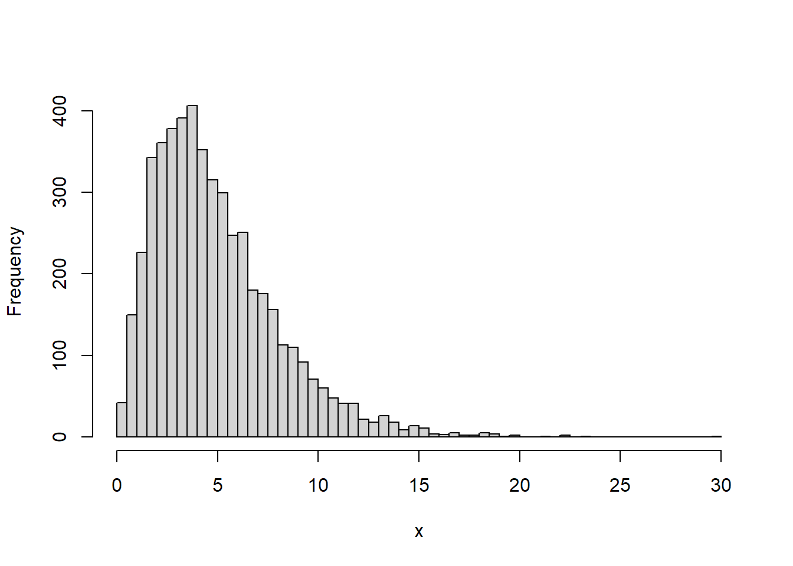
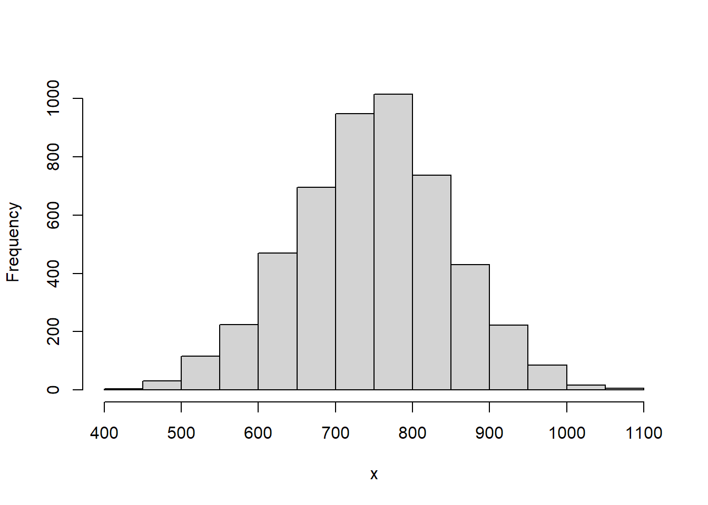
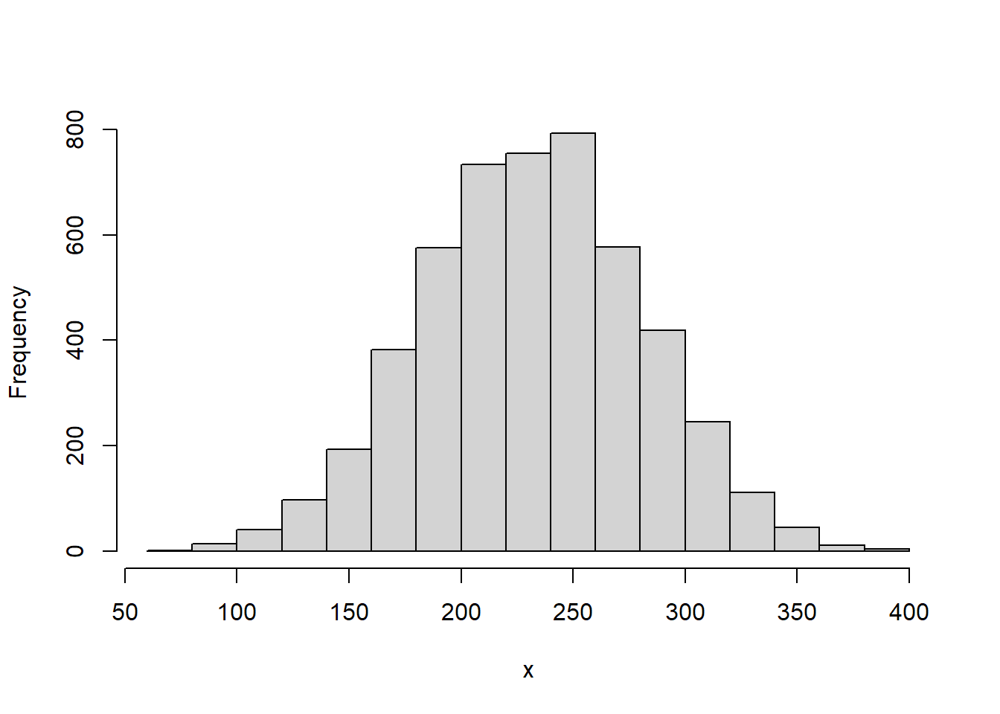

5.5 R 통계 함수
5.5.1 sample()
sample(x, size, replace = FALSE, prob = NULL) 함수는 데이터 x에서 무작위로 데이터를 size만큼 추출하여 반환합니다.
- x : 1개 이상의 요소를 가진 벡터(모집단)
- size : 추출할 갯수(표본의 크기)
- replace : 기본값은 FALSE로 비복원 추출, TRUE이면 복원 추출
- prob : 표본이 추출될 가중치
간소화 버전 함수로 sample.int(n, size = n, replace = FALSE, prob = NULL)가 있습니다. 1부터 n 사이의 값에서 기본적으로 n만큼 데이터를 추출합니다. 만일 size를 지정하면 size 숫자만큼 추출합니다.
set.seed(5) # 아래 무작위 추출 결과가 항상 동일하게 나오게 함
x <- 1:12
sample(x, size = 5)
#> [1] 2 11 9 10 1
sample(x, size = 5, replace = TRUE)
#> [1] 5 7 7 3 3
# 1은 20%, 2는 30%, 3은 50% 확률로 추출됨 (가중표본추출)
sample(1:3, size = 5, replace = TRUE, prob = c(2, 3, 5))
#> [1] 2 3 3 3 1# 베루누이 실험 - 100회
sample(0:1, 100, replace = TRUE)
#> [1] 1 1 0 1 0 0 1 1 0 1 0 1 1 0 0 1 1 1 1 0 0 0 0 1 1 1 1 1 0 1 1 1 1 1 1 1 1
#> [38] 1 0 0 1 1 0 0 0 1 0 0 0 1 0 1 1 1 1 0 1 1 1 1 0 1 0 0 0 1 1 0 1 0 1 0 0 1
#> [75] 0 1 0 0 1 0 1 0 1 1 1 0 1 0 0 1 0 1 0 1 0 1 0 1 1 1# 데이터 프레임에서 무작위로 표본을 추출합니다.
# 예제는 iris(150개 행)에서 30개를 무작위로 추출합니다.
str(iris)
#> 'data.frame': 150 obs. of 5 variables:
#> $ Sepal.Length: num 5.1 4.9 4.7 4.6 5 5.4 4.6 5 4.4 4.9 ...
#> $ Sepal.Width : num 3.5 3 3.2 3.1 3.6 3.9 3.4 3.4 2.9 3.1 ...
#> $ Petal.Length: num 1.4 1.4 1.3 1.5 1.4 1.7 1.4 1.5 1.4 1.5 ...
#> $ Petal.Width : num 0.2 0.2 0.2 0.2 0.2 0.4 0.3 0.2 0.2 0.1 ...
#> $ Species : Factor w/ 3 levels "setosa","versicolor",..: 1 1 1 1 1 1 1 1 1 1 ...
set.seed(357)
idx <- sample(nrow(iris), 30) # sample(1:150, size = 30)과 동일
idx # 추출된 번호 확인(생략 가능)
#> [1] 119 24 145 75 10 90 70 147 51 135 85 25 46 143 44 50 149 42 124
#> [20] 87 140 54 35 47 138 123 104 16 62 134
sam <- iris[idx,]
str(sam)
#> 'data.frame': 30 obs. of 5 variables:
#> $ Sepal.Length: num 7.7 5.1 6.7 6.4 4.9 5.5 5.6 6.3 7 6.1 ...
#> $ Sepal.Width : num 2.6 3.3 3.3 2.9 3.1 2.5 2.5 2.5 3.2 2.6 ...
#> $ Petal.Length: num 6.9 1.7 5.7 4.3 1.5 4 3.9 5 4.7 5.6 ...
#> $ Petal.Width : num 2.3 0.5 2.5 1.3 0.1 1.3 1.1 1.9 1.4 1.4 ...
#> $ Species : Factor w/ 3 levels "setosa","versicolor",..: 3 1 3 2 1 2 2 3 2 3 ...데이터를 80:20으로 나누어 추출하겠습니다.
dataset <- iris
str(dataset)
#> 'data.frame': 150 obs. of 5 variables:
#> $ Sepal.Length: num 5.1 4.9 4.7 4.6 5 5.4 4.6 5 4.4 4.9 ...
#> $ Sepal.Width : num 3.5 3 3.2 3.1 3.6 3.9 3.4 3.4 2.9 3.1 ...
#> $ Petal.Length: num 1.4 1.4 1.3 1.5 1.4 1.7 1.4 1.5 1.4 1.5 ...
#> $ Petal.Width : num 0.2 0.2 0.2 0.2 0.2 0.4 0.3 0.2 0.2 0.1 ...
#> $ Species : Factor w/ 3 levels "setosa","versicolor",..: 1 1 1 1 1 1 1 1 1 1 ...
set.seed(357)
idx <- sample(1:nrow(dataset), size = round(0.8*nrow(dataset)))
train <- dataset[idx,] #훈련용 데이터
test <- dataset[-idx,] #검증용 데이터
str(train)
#> 'data.frame': 120 obs. of 5 variables:
#> $ Sepal.Length: num 7.7 5.1 6.7 6.4 4.9 5.5 5.6 6.3 7 6.1 ...
#> $ Sepal.Width : num 2.6 3.3 3.3 2.9 3.1 2.5 2.5 2.5 3.2 2.6 ...
#> $ Petal.Length: num 6.9 1.7 5.7 4.3 1.5 4 3.9 5 4.7 5.6 ...
#> $ Petal.Width : num 2.3 0.5 2.5 1.3 0.1 1.3 1.1 1.9 1.4 1.4 ...
#> $ Species : Factor w/ 3 levels "setosa","versicolor",..: 3 1 3 2 1 2 2 3 2 3 ...5.5.2 균등분포(unif)
확률분포는 연속확률분포와 이산확률분포로 구분할 수 있습니다. 연속확률분포에는 균등분포, 정규분포, 표준정규분포, 감마분포, 지수분포, 베타분포, t분포, 카이제곱분포, F분포, 웨이블분포, 로그정규분포 등이 있습니다. 이산확률 분포는 베르누이분포, 이항분포, 다항분포, 초기하분포, 기하분포, 음이항분포, 포아송분포 등이 있습니다.
균등분포는 분포가 특정 범위내에서 균등하게 나타나는 경우를 의미합니다. 다른말로 연속균등분포라고 합니다. 영어로는 uniform distribution입니다.
균등분포와 관련된 함수는 다음 4가지 있습니다.
runif(n, min = 0, max = 1)dunif(x, min = 0, max = 1, log = FALSE)punif(q, min = 0, max = 1, lower.tail = TRUE, log.p = FALSE)qunif(p, min = 0, max = 1, lower.tail = TRUE, log.p = FALSE)
위 함수명은 접두어 r, d, p, q와 균등분포를 의미하는 unif가 결합하여 만들어진 것입니다. 접두어의 의미는 다음과 같습니다.
- r : 난수(random number) 발생
- d : 확률밀도함수(density)
- p : 누적분포함수(distribution function)
- q : 분위수(quantile function)
runif 함수는 난수를 의미하는 r과 균등분포를 의미하는 unif가 결합하여 만들어진 함수명입니다. 따라서 runif(n, min = 0, max = 1) 함수는 최소값(0)부터 최대값(1)사이에 균등분포로 n개의 난수를 생성하여 반환합니다. 다른 확률분포 함수들의 함수명도 이와 같은 규칙으로 만들어졌다고 볼 수 있습니다.
runif(10, 2, 5) # 2와 5사이에 균등분포로 10개의 난수 발생
#> [1] 3.91 2.56 2.63 4.89 2.91 3.29 4.71 4.99 4.75 4.51
runif(10) # 0과 1사이에 균등분포로 10개의 난수 발생
#> [1] 0.3551 0.6242 0.9761 0.7250 0.9402 0.3139 0.4869 0.0782 0.4322 0.4665
mean(runif(100000)) # 0~1 균등분포로 추출된 값들의 평균은 0.5에 가까움
#> [1] 0.499dunif(x, min = 0, max = 1, log = FALSE) 함수는 균등분포의 확률밀도함수입니다.
최소값(기본값 0)부터 최대값(기본값 1)사이의 균등분포함수에서 인자 x의 함수값을 구해 반환합니다.
x <- seq(-2, 5, by = 0.01)
str(x)
#> num [1:701] -2 -1.99 -1.98 -1.97 -1.96 -1.95 -1.94 -1.93 -1.92 -1.91 ...
# 균등분포의 확률밀도함수 시각화 (0과 3사이의 분포는 균등함)
plot(x, dunif(x, 0, 3), type = "l", col = "red")
punif(q, min = 0, max = 1, lower.tail = TRUE, log.p = FALSE) 함수는 균등분포의 누적분포함수입니다.
최소값(기본값 0)부터 최대값(기본값 1)사이의 균등분포함수에서 인자 q의 누적분포함수값 즉 확률을 구해 반환합니다.
x <- seq(-2, 5, by = 0.01)
str(x)
#> num [1:701] -2 -1.99 -1.98 -1.97 -1.96 -1.95 -1.94 -1.93 -1.92 -1.91 ...
# 균등분포의 누적분포함수 시각화 (0과 3사이의 누적분포는 일정하게 상승함)
plot(x, punif(x, 0, 3), type = "l", col = "red")
qunif(p, min = 0, max = 1, lower.tail = TRUE, log.p = FALSE) 함수는 균등분포의 분위수를 구하는 함수입니다.
최소값(기본값 0)부터 최대값(기본값 1)사이의 균등분포함수에서 확률이 인자 p일 때의 분위수값을 구해 반환합니다. punif 함수와 반대되는 함수라 할 수 있습니다.
5.5.3 정규분포(norm)
정규분포는 분포가 종 모양의 형태로 평균에 가까울수록 발생확률이 높고 평균에서 멀어질수록 발생할 확률이 낮은 분포입니다. 가우스가 처음 정립해서 가우시안(Gaussian) 분포라고도 합니다. 영어로는 normal distribution입니다.
표준정규분포(standard normal distribution)는 평균이 0이고, 표준편차가 1인 정규분포를 의미합니다.
“양 끝의 극단에 있는 것은 드물고 소수인 반면, 중간에 있는 것들은 흔하고 다수임을 알지 못하나?” - 소크라테스, 파이돈
정규분포와 관련된 함수는 다음 4가지 있습니다.
rnorm(n, mean = 0, sd = 1)dnorm(x, mean = 0, sd = 1, log = FALSE)pnorm(q, mean = 0, sd = 1, lower.tail = TRUE, log.p = FALSE)qnorm(p, mean = 0, sd = 1, lower.tail = TRUE, log.p = FALSE)
rnorm(n, mean = 0, sd = 1) 함수는 주어진 평균 mean(기본값 0)과 표준편차 sd(기본값 1)의 정규분포에서 n개의 난수를 생성하여 반환합니다. rnorm 함수명은 난수를 의미하는 r과 정규분포를 의미하는 norm이 결합되어진 것입니다.
# 평균이 0이고 표준편차기 1인 표준정규분포에서 난수 10개 생성
rnorm(10)
#> [1] 0.243 -1.663 0.223 -0.169 0.134 0.366 1.892 -0.386 1.517 2.191
# 평균이 50이고 표준편차기 3인 분포에서 난수 10개 생성
rnorm(10, mean = 50, sd = 3)
#> [1] 52.2 52.1 46.4 53.4 50.3 44.8 49.1 53.7 52.3 50.9
dnorm(x, mean = 0, sd = 1, log = FALSE) 함수는 정규분포의 확률밀도함수입니다.
평균 mean(기본값 0)과 표준편차 sd(기본값 1)의 정규분포에서 인자 x의 함수값을 구해 반환합니다.

# 정규분포 그래프에서 -5에서 1까지의 면적(핑크색)은 전체면적의 84%
# pnorm(1, mean = 0, sd = 1)
x <- seq(-5, 5, by = 0.01)
plot(x, dnorm(x, 0, 1), type = "l", lwd = 2, col = "red")
u <- seq(-5, 1, by = 0.01)
v <- dnorm(u, mean = 0, sd = 1)
polygon(c(-5, u, 1), c(0, v, 0), col = "pink")pnorm(q, mean = 0, sd = 1, lower.tail = TRUE, log.p = FALSE) 함수는 정규분포의 누적분포함수입니다. 평균 mean(기본값 0)과 표준편차 sd(기본값 1)의 정규분포에서 인자 q의 누적분포함수값 즉 확률을 구해 반환합니다.
x <- seq(-5, 5, by = 0.01)
# 정규분포의 누적분포함수 시각화
plot(x, pnorm(x, mean = 0, sd = 1), type = "l", col = "red")
# 표준정규분포에서 q가 0.5일때의 누적분포함수값은? 즉 확률은?
pnorm(0.5, mean = 0, sd = 1)
#> [1] 0.691
# 표준정규분포에서 가로축 1까지의 누적분포함수값(확률))은 0.84(84%)
pnorm(1, mean = 0, sd = 1)
#> [1] 0.841qnorm(p, mean = 0, sd = 1, lower.tail = TRUE, log.p = FALSE) 함수는 정규분포의 분위수를 구하는 함수입니다. 평균 mean(기본값 0)과 표준편차 sd(기본값 1)의 정규분포에서 확률이 인자 p일 때의 분위수 값을 구해 반환합니다.
5.5.4 감마분포(gamma)
감마분포는 α번째 사건이 일어날 때 까지 걸리는 시간에 대한 연속확률분포입니다. 참고로 감마분포는 감마함수를 바탕으로 하고 있는데, 감마함수는 수학자 오일러가 제안한 함수입니다.
감마분포와 관련된 함수는 다음 4가지 있습니다.
- rgamma(n, shape, rate = 1, scale = 1/rate)
- dgamma(x, shape, rate = 1, scale = 1/rate, log = FALSE)
- pgamma(q, shape, rate = 1, scale = 1/rate, lower.tail = TRUE, log.p = FALSE)
- qgamma(p, shape, rate = 1, scale = 1/rate, lower.tail = TRUE, log.p = FALSE)
rgamma(n, shape, rate = 1, scale = 1/rate) 함수는 주어진 형태 shape와 척도 scale(기본값 1/rate, rate의 기본값은 1)의 감마분포에서 n개의 난수를 생성하여 반환합니다. rgamma 함수명은 난수를 의미하는 r과 감마분포를 의미하는 gamma가 결합되어진 것입니다.
# 형태가 1인 감마분포에서 난수 10개 생성
rgamma(n = 10, shape = 1)
#> [1] 1.367 0.370 0.128 1.778 1.192 1.304 0.679 2.363 1.072 0.333
# 평균이 50이고 표준편차기 3인 분포에서 난수 10개 생성
rgamma(10, shape = 1, rate = 0.001)
#> [1] 1185.22 922.18 796.91 1091.54 1804.10 957.21 1263.23 2501.09 8.34
#> [10] 126.55dgamma(x, shape, rate = 1, scale = 1/rate, log = FALSE) 함수는 감마분포의 확률밀도함수입니다. 형태 shape와 척도 scale의 감마분포에서 인자 x의 함수값을 구해 반환합니다.

x <- seq(0, 10, by = 0.01)
plot(x, dgamma(x, shape = 1, scale = 2), type = "l", col = "red")
lines(x, dgamma(x, shape = 2, scale = 2), type = "l", col = "green")
lines(x, dgamma(x, shape = 3, scale = 2), type = "l", col = "blue")
lines(x, dgamma(x, shape = 4, scale = 2), type = "l", col = "purple")x <- seq(0, 10, by = 0.01)
plot(x, dgamma(x, shape = 2, scale = 2), type = "l", col = "red")
lines(x, dgamma(x, shape = 2, scale = 3), type = "l", col = "green")
lines(x, dgamma(x, shape = 2, scale = 4), type = "l", col = "blue")
lines(x, dgamma(x, shape = 2, scale = 5), type = "l", col = "purple")
# 0에서 1까지의 면적(핑크색)은? pgamma(1, shape = 1)
x <- seq(0, 5, by = 0.01)
plot(x, dgamma(x, shape = 1), type = "l", lwd = 2, col = "red")
u <- seq(0, 1, by = 0.01)
v <- dgamma(u, shape = 1)
polygon(c(0, u, 1), c(0, v, 0), col = "pink")pgamma(q, shape, rate = 1, scale = 1/rate, lower.tail = TRUE, log.p = FALSE) 함수는 감마분포의 누적분포함수입니다. 형태 shape와 척도 scale의 감마분포에서 인자 q의 누적분포함수값 즉 확률을 구해 반환합니다.
# q가 0.5일때의 누적분포함수값은? 즉 확률은?
pgamma(0.5, shape = 1)
#> [1] 0.393
# 가로축 1까지의 누적분포함수값(확률))은?
pgamma(1, shape = 1)
#> [1] 0.632qgamma(p, shape, rate = 1, scale = 1/rate, lower.tail = TRUE, log.p = FALSE) 함수는 감마분포의 분위수를 구하는 함수입니다. 형태 shape와 척도 scale의 감마분포에서 확률이 인자 p일 때의 분위수 값을 구해 반환합니다.
5.5.5 지수분포(exp)
지수분포는 감마분포의 특수한 경우라고 볼 수 있습니다. 감마분포가 α번째 사건이 일어날 때 까지 걸리는 시간에 대한 분포라면, 지수분포는 첫번째 사건이 발생할 때 까지 걸리는 시간에 대한 분포라고 할 수 있습니다. 두 분포함수의 인자를 기본값으로 하면 결과는 거의 동일하게 나옵니다.
참고로 지수분포와 포아송분포는 서로 반대되는 과점을 가지고 있습니다. 지수분포가 첫번째 사건이 발생할 때까지의 대기시간인 반면, 포아송분포는 단위 시간 당 발생하는 사건의 횟수입니다. 지수포는 대기시간, 포아송분포는 횟수입니다.
지수분포는 기하분포와도 관련이 있습니다. 지수분포는 사건이 발생할 때까지의 대기시간인 반면, 기하분포는 사건이 발생할 때까지의 시도횟수입니다.
지수분포와 관련된 함수는 다음 4가지 있습니다.
- rexp(n, rate = 1)
- dexp(x, rate = 1, log = FALSE)
- pexp(q, rate = 1, lower.tail = TRUE, log.p = FALSE)
- qexp(p, rate = 1, lower.tail = TRUE, log.p = FALSE)
rexp(n, rate = 1) 함수는 주어진 감마값 rate(기본값 1)의 지수분포에서 n개의 난수를 생성하여 반환합니다. rexp 함수명은 난수를 의미하는 r과 지수분포를 의미하는 exp가 결합되어진 것입니다.
set.seed(123)
# 난수 10개 생성
rexp(n = 10, rate = 1)
#> [1] 0.8435 0.5766 1.3291 0.0316 0.0562 0.3165 0.3142 0.1453 2.7262 0.0292
dexp(x, rate = 1, log = FALSE) 함수는 지수분포의 확률밀도함수입니다. 주어진 감마값 rate(기본값 1)의 지수분포에서 인자 x의 함수값을 구해 반환합니다.

# 0에서 1까지의 면적(핑크색)은? pexp(1, rate = 1)
x <- seq(0, 5, by = 0.01)
plot(x, dexp(x, rate = 1), type = "l", lwd = 2, col = "red")
u <- seq(0, 1, by = 0.01)
v <- dexp(u, rate = 1)
polygon(c(0, u, 1), c(0, v, 0), col = "pink")pexp(q, rate = 1, lower.tail = TRUE, log.p = FALSE) 함수는 지수분포의 누적분포함수입니다. 주어진 rate(기본값 1)의 지수분포에서 인자 q의 누적분포함수값 즉 확률을 구해 반환합니다.

# q가 0.5일때의 누적분포함수값은? 즉 확률은?
pexp(0.5, rate = 1)
#> [1] 0.393
# 0~1까지의 면적 비율
pexp(1, rate = 1)
#> [1] 0.632qexp(p, rate = 1, lower.tail = TRUE, log.p = FALSE) 함수는 지수분포의 분위수를 구하는 함수입니다. 주어진 rate의 지수분포에서 확률이 인자 p일 때의 분위수 값을 구해 반환합니다.
5.5.6 베타분포(beta)
베타분포는 두 매개변수 α와 β에 따라 [0, 1] 구간에서 정의되는 분포입니다. 베타분포는 주로 베이지안 추정에서 많이 다루어지는 분포입니다. 모수가 α와 β 두 개이므로 다양한 형태의 분포가 만들어질 수 있습니다. 베타분포를 계산하는 데 사용되는 베타함수는 감마함수를 만든 오일러가 23세(1730년)에 만든 함수입니다.
베타분포와 관련된 함수는 다음 4가지 있습니다.
- rbeta(n, shape1, shape2, ncp = 0)
- dbeta(x, shape1, shape2, ncp = 0, log = FALSE)
- pbeta(q, shape1, shape2, ncp = 0, lower.tail = TRUE, log.p = FALSE)
- qbeta(p, shape1, shape2, ncp = 0, lower.tail = TRUE, log.p = FALSE)
위 함수에서 인자 shape1과 shape2는 각각 베타분포의 매개변수 α와 β라 할 수 있습니다.
rbeta(n, shape1, shape2, ncp = 0) 함수는 매개변수 shape1과 shape2의 베타분포에서 n개의 난수를 생성하여 반환합니다. rbeta 함수명은 난수를 의미하는 r과 베타분포를 의미하는 beta가 결합되어진 것입니다.
set.seed(123)
# 난수 10개 생성
rbeta(n = 10, shape1 = 1, shape2 = 1)
#> [1] 0.7124 0.5910 0.0595 0.4719 0.4486 0.0432 0.3224 0.8971 0.7539 0.6721dbeta(x, shape1, shape2, ncp = 0, log = FALSE) 함수는 베타분포의 확률밀도함수입니다. 매개변수 shape1과 shape2의 베타분포에서 인자 x의 함수값을 구해 반환합니다.
x <- seq(0, 1, by = 0.01)
# 확률밀도함수 시각화
plot(x, dbeta(x, shape1 = 2, shape2 = 5), type = "l", col = "red")
매개변수 shape1과 shape2의 값에 따라 다양한 형태의 분포가 나옵니다.
x <- seq(0, 1, by = 0.01)
plot(x, dbeta(x, shape1 = 1, shape2 = 2), type = "l", col = "red")
lines(x, dbeta(x, shape1 = 2, shape2 = 2), type = "l", col = "green")
lines(x, dbeta(x, shape1 = 3, shape2 = 2), type = "l", col = "blue")
lines(x, dbeta(x, shape1 = 4, shape2 = 2), type = "l", col = "purple")x <- seq(0, 1, by = 0.01)
plot(x, dbeta(x, shape1 = 2, shape2 = 1), type = "l", col = "red")
lines(x, dbeta(x, shape1 = 2, shape2 = 2), type = "l", col = "green")
lines(x, dbeta(x, shape1 = 2, shape2 = 3), type = "l", col = "blue")
lines(x, dbeta(x, shape1 = 2, shape2 = 4), type = "l", col = "purple")# 0에서 0.5까지의 면적(핑크색)은? pbeta(0.5, shape1 = 2, shape2 = 3)
x <- seq(0, 1, by = 0.01)
plot(x, dbeta(x, shape1 = 2, shape2 = 3), type = "l", lwd = 2, col = "red")
u <- seq(0, 0.5, by = 0.01)
v <- dbeta(u, shape1 = 2, shape2 = 3)
polygon(c(0, u, 0.5), c(0, v, 0), col = "pink")
pbeta(q, shape1, shape2, ncp = 0, lower.tail = TRUE, log.p = FALSE) 함수는 베타분포의 누적분포함수입니다. 매개변수 shape1과 shape2의 베타분포에서 인자 q의 누적분포함수값 즉 확률을 구해 반환합니다.
x <- seq(0, 1, by = 0.01)
# 누적분포함수 시각화
plot(x, pbeta(x, shape1 = 2, shape2 = 3), type = "l", col = "red")
qbeta(p, shape1, shape2, ncp = 0, lower.tail = TRUE, log.p = FALSE) 함수는 베타분포의 분위수를 구하는 함수입니다. 매개변수 shape1과 shape2의 베타분포에서 확률이 인자 p일 때의 분위수 값을 구해 반환합니다.
5.5.7 t분포(t)
t분포는 ’스튜던트 t분포(Student’s t-distribution)’를 간단하게 부르는 말입니다. t분포는 프리드리히 로베르트 헬메르트(1875)와 야코프 뤼로트(1876)가 발견하였는데 학계에 널리 알려지지 않다가, 1908년에 기네스 양조 공장에서 일하는 윌리엄 고셋이 ’스튜던트’라는 필명으로 맥주에 사용되는 보리의 질을 시험하기 위해 이 분포를 도입하였습니다. 저명한 통계학자인 로널드 피셔가 이 분포를 ’스튜던트 t분포’로 소개하면서 널리 알려지게 되었습니다.
t 분포는 종모양으로서 좌우대칭을 이룹니다. 정규분포와 비슷한 모양이지만 정규분포보다는 옆으로 넓게 더 퍼진 모양이라고 볼 수 있습니다. t 분포의 모양을 결정하는 것은 자유도이며, 자유도가 커질수록 표준정규분포에 가깝게 됩니다. 통계학자들은 보통 표본수가 30이상이면 정규분포에 가깝다고 합니다. 이를 뒤집어 해석하면 표본의 크기가 30보다 작으면 t분포를 사용할 필요가 있다고 볼 수 있습니다. 또한 t분포는 정규분포의 평균을 측정할 때 주로 사용되는 확률분포입니다. 통계학에서 가설검정과 회귀분석에 많이 사용됩니다.
t분포와 관련된 함수는 4가지가 있습니다.
- rt(n, df, ncp)
- dt(x, df, ncp, log = FALSE)
- pt(q, df, ncp, lower.tail = TRUE, log.p = FALSE)
- qt(p, df, ncp, lower.tail = TRUE, log.p = FALSE)
위 함수에서 인자 df는 자유도를 의미합니다. t분포에서 자유도는 표본의 갯수인 n에서 1을 뺀 값입니다. ncp는 비중심모수(non-centrally parameter)입니다.
rt(n, df, ncp) 함수는 자유도 df의 t분포에서 n개의 난수를 생성하여 반환합니다. rt 함수명은 난수를 의미하는 r과 t분포를 의미하는 t가 결합되어진 것입니다.
set.seed(123)
# 난수 10개 생성
rt(n = 10, df = 3)
#> [1] -0.776 -1.278 -0.142 -2.360 1.654 2.430 0.613 0.618 -0.897 -4.887
dt(x, df, ncp, log = FALSE) 함수는 t분포의 확률밀도함수입니다. 자유도 df의 t분포에서에서 인자 x의 함수값을 구해 반환합니다.
자유도 df의 값에 따라 다양한 형태의 분포가 나옵니다. df가 커질수록 정규분포에 가까워집니다. 검은색 선은 표준정규분포선입니다. 자유도가 30에 가까워질수록 t분포는 정규분포에 가까워지는 것을 볼 수 있습니다.
x <- seq(-5, 5, by = 0.01)
plot(x, dt(x, df = 28), type = "l", col = "red")
lines(x, dt(x, df = 10), type = "l", col = "green")
lines(x, dt(x, df = 5), type = "l", col = "blue")
lines(x, dt(x, df = 2), type = "l", col = "purple")
lines(x, dnorm(x), type = "l", lwd =2, col = "black")x <- seq(-5, 8, by = 0.01)
plot(x, dt(x, df = 15), type = "l", col = "red")
lines(x, dt(x, df = 15, ncp = 1), type = "l", col = "green")
lines(x, dt(x, df = 15, ncp = 2), type = "l", col = "blue")
lines(x, dt(x, df = 15, ncp = 3), type = "l", col = "purple")
# 0.5이하의 면적(핑크색)은? pt(0.5, df = 10)
x <- seq(-5, 5, by = 0.01)
plot(x, dt(x, df = 10), type = "l", lwd = 2, col = "red")
u <- seq(-5, 0.5, by = 0.01)
v <- dt(u, df = 10)
polygon(c(-5, u, 0.5), c(0, v, 0), col = "pink")pt(q, df, ncp, lower.tail = TRUE, log.p = FALSE) 함수는 t분포의 누적분포함수입니다. 자유도 df의 t분포에서 인자 q의 누적분포함수값 즉 확률을 구해 반환합니다.

qt(p, df, ncp, lower.tail = TRUE, log.p = FALSE) 함수는 t분포의 분위수를 구하는 함수입니다. 자유도 df의 t분포에서 확률이 인자 p일 때의 분위수 값을 구해 반환합니다.
5.5.8 카이제곱분포(chisq)
카이제곱분포(\(χ^2\)분포)는 k개의 서로 독립적인 표준정규분포의 확률변수를 각각 제곱한 다음 합해서 얻어지는 분포입니다. 이때 k는 자유도(df)로서 카이제곱분포의 매개변수가 됩니다. 카이제곱분포는 감마분포의 특수한 형태라고 할 수 있습니다.
카이제곱분포는 오른쪽으로 긴 꼬리를 가진 비대칭 분포모양을 가지고 있습니다. 카이제곱분포의 모양을 결정하는 것은 자유도이며, 자유도가 커질수록 정규분포에 가깝게 됩니다. 카이제곱분포는 모분산에 대한 추정과 검정에 사용되며, 범주형 자료의 적합도 검정, 동질성 검정, 독립성 검정 등에 사용됩니다.
카이제곱분포와 관련된 함수는 4가지가 있습니다.
- rchisq(n, df, ncp = 0)
- dchisq(x, df, ncp = 0, log = FALSE)
- pchisq(q, df, ncp = 0, lower.tail = TRUE, log.p = FALSE)
- qchisq(p, df, ncp = 0, lower.tail = TRUE, log.p = FALSE)
위 함수에서 인자 df는 자유도를 의미합니다.
rchisq(n, df, ncp = 0) 함수는 자유도 df의 카이제곱분포에서 n개의 난수를 생성하여 반환합니다. rchisq 함수명은 난수를 의미하는 r과 카이제곱분포를 의미하는 chisq가 결합되어진 것입니다.
set.seed(123)
# 난수 10개 생성
rchisq(n = 10, df = 3)
#> [1] 1.0361 5.0887 0.0482 2.2669 6.9009 3.0281 8.9637 10.2529 3.2489
#> [10] 2.5048
dchisq(x, df, ncp = 0, log = FALSE) 함수는 카이제곱분포의 확률밀도함수입니다. 자유도 df의 카이제곱분포에서에서 인자 x의 함수값을 구해 반환합니다.
자유도 df의 값에 따라 다양한 형태의 분포가 나옵니다. df가 커질수록 정규분포에 가까워집니다.
x <- seq(0, 15, by = 0.01)
plot(x, dchisq(x, df = 2), type = "l", col = "red")
lines(x, dchisq(x, df = 4), type = "l", col = "green")
lines(x, dchisq(x, df = 6), type = "l", col = "blue")
lines(x, dchisq(x, df = 8), type = "l", col = "purple")x <- seq(0, 15, by = 0.01)
plot(x, dchisq(x, df = 5), type = "l", col = "red")
lines(x, dchisq(x, df = 5, ncp = 1), type = "l", col = "green")
lines(x, dchisq(x, df = 5, ncp = 2), type = "l", col = "blue")
lines(x, dchisq(x, df = 5, ncp = 3), type = "l", col = "purple")
# 0에서 5까지의 면적(핑크색)은? pchisq(5, df = 3)
x <- seq(0, 15, by = 0.01)
plot(x, dchisq(x, df = 3), type = "l", lwd = 2, col = "red")
u <- seq(0, 5, by = 0.01)
v <- dchisq(u, df = 3)
polygon(c(0, u, 5), c(0, v, 0), col = "pink")
pchisq(q, df, ncp = 0, lower.tail = TRUE, log.p = FALSE) 함수는 카이제곱분포의 누적분포함수입니다. 자유도 df의 카이제곱분포에서 인자 q의 누적분포함수값 즉 확률을 구해 반환합니다.
qchisq(p, df, ncp = 0, lower.tail = TRUE, log.p = FALSE) 함수는 카이제곱분포의 분위수를 구하는 함수입니다. 자유도 df의 카이제곱분포에서 확률이 인자 p일 때의 분위수 값을 구해 반환합니다.
5.5.9 F분포(f)
F분포는 두개의 독립적인 카이제곱분포의 확률변수의 비(ratio)로 얻어지는 연속확률분포입니다.
F분포는 카이제곱분포처럼 오른쪽으로 긴 꼬리를 가진 비대칭 분포모양을 가지고 있습니다. F분포의 모양을 결정하는 것은 분자와 분모의 자유도이며, 두 자유도가 커질수록 정규분포에 가깝게 됩니다. F분포는 분산의 비교, 분산분석, 회귀분석 등에 많이 사용됩니다.
F분포와 관련된 함수는 4가지가 있습니다.
- rf(n, df1, df2, ncp)
- df(x, df1, df2, ncp, log = FALSE)
- pf(q, df1, df2, ncp, lower.tail = TRUE, log.p = FALSE)
- qf(p, df1, df2, ncp, lower.tail = TRUE, log.p = FALSE)
위 함수에서 인자 df1과 df2는 자유도를 의미합니다.
rf(n, df1, df2, ncp) 함수는 자유도 df1과 df2의 F분포에서 n개의 난수를 생성하여 반환합니다. rf 함수명은 난수를 의미하는 r과 F분포를 의미하는 f가 결합되어진 것입니다.
set.seed(123)
# 난수 10개 생성
rf(n = 10, df1 = 2, df2 = 2)
#> [1] 0.107 0.662 0.330 4.033 20.460 3.624 2.480 3.835 32.241 0.956
df(x, df1, df2, ncp, log = FALSE) 함수는 F분포의 확률밀도함수입니다. 자유도 df1과 df2의 F분포에서 인자 x의 함수값을 구해 반환합니다.
자유도 df1과 df2의 값에 따라 다양한 형태의 분포가 나옵니다. df1과 df2가 커질수록 정규분포에 가까워집니다.
x <- seq(0, 5, by = 0.01)
plot(x, df(x, df1 = 2, df2 = 1), type = "l", col = "red")
lines(x, df(x, df1 = 5, df2 = 1), type = "l", col = "green")
lines(x, df(x, df1 = 10, df2 = 1), type = "l", col = "blue")
lines(x, df(x, df1 = 20, df2 = 20), type = "l", col = "purple")
x <- seq(0, 5, by = 0.01)
plot(x, df(x, df1 = 20, df2 = 20), type = "l", col = "red")
lines(x, df(x, df1 = 3, df2 = 5), type = "l", col = "green")
lines(x, df(x, df1 = 3, df2 = 10), type = "l", col = "blue")
lines(x, df(x, df1 = 3, df2 = 15), type = "l", col = "purple")# 0에서 2까지의 면적(핑크색)은? pf(2, df1 = 3, df2 =3)
x <- seq(0, 5, by = 0.01)
plot(x, df(x, df1 = 3, df2 = 3), type = "l", lwd = 2, col = "red")
u <- seq(0, 2, by = 0.01)
v <- df(u, df1 = 3, df2 = 3)
polygon(c(0, u, 2), c(0, v, 0), col = "pink")
pf(q, df1, df2, ncp, lower.tail = TRUE, log.p = FALSE) 함수는 F분포의 누적분포함수입니다. 자유도 df1과 df2의 F분포에서 인자 q의 누적분포함수값 즉 확률을 구해 반환합니다.
qf(p, df1, df2, ncp, lower.tail = TRUE, log.p = FALSE) 함수는 F분포의 분위수를 구하는 함수입니다. 자유도 df1과 df2의 F분포에서 확률이 인자 p일 때의 분위수 값을 구해 반환합니다.
5.5.10 와이블분포(weibull)
Weibull분포는 국내 번역용어로는 와이블분포, 베이블분포 등이 있습니다. Weibull분포는 지수분포를 보다 일반화시켜 여러 다양한 확률분포 형태를 나타낼 수 있도록 고안된 확률분포입니다. 스웨덴의 물리학자 와이블(W. Weibull)이 1939년 재료의 파괴강도에 대한 분포를 표시하기 위해 이 분포를 발표하였습니다. 주로 산업현장에서 부품의 수명을 추정하는 데 많이 사용되는 분포입니다. 또한 날씨예보, 신뢰성 공학에서의 실패분석 등에 사용되기도 합니다.
Weibull분포의 모양을 결정하는 것은 형상 모수(shape parameter)와 척도 모수(scale parameter)입니다. 형상모수의 값이 낮으면 오른쪽으로 치우친 곡선을, 높으면 왼쪽으로 치우친 곡선을 나타내며, 값이 3이면 정규분포에 가까운 곡선을 나타냅니다. 척도모수의 값이 크면 분포가 좁아지고, 반대로 값이 크면 분포가 넓어집니다.
Weibull분포와 관련된 함수는 4가지가 있습니다.
- rweibull(n, shape, scale = 1)
- dweibull(x, shape, scale = 1, log = FALSE)
- pweibull(q, shape, scale = 1, lower.tail = TRUE, log.p = FALSE)
- qweibull(p, shape, scale = 1, lower.tail = TRUE, log.p = FALSE)
위 함수에서 인자 shape는 형상모수, scale은 척도모수를 의미합니다.
rweibull(n, shape, scale = 1) 함수는 형상모수 shape와 척도모수 scale의 Weibull분포에서 n개의 난수를 생성하여 반환합니다. rweibull 함수명은 난수를 의미하는 r과 Weibull분포를 의미하는 weibull이 결합되어진 것입니다.
set.seed(123)
# 난수 10개 생성
rweibull(n = 10, shape = 2, scale = 2)
#> [1] 2.233 0.975 1.891 0.705 0.495 3.515 1.598 0.675 1.543 1.771dweibull(x, shape, scale = 1, log = FALSE) 함수는 Weibull분포의 확률밀도함수입니다. 형상모수 shape와 척도모수 scale의 Weibull분포에서 인자 x의 함수값을 구해 반환합니다.
x <- seq(0, 7, by = 0.01)
# 확률밀도함수 시각화
plot(x, dweibull(x, shape = 2, scale = 2), type = "l", col = "red")형상모수 shape와 척도모수 scale의 값에 따라 다양한 형태의 분포가 나옵니다. 형상모수의 값이 낮으면 오른쪽으로 치우친 곡선을, 높으면 왼쪽으로 치우친 곡선을 나타내며, 값이 3이면 정규분포에 가까운 곡선을 나타냅니다. 척도모수의 값이 크면 분포가 좁아지고, 반대로 값이 크면 분포가 넓어집니다.
x <- seq(0, 5, by = 0.01)
plot(x, dweibull(x, shape = 5, scale = 2), type = "l", col = "red")
lines(x, dweibull(x, shape = 3, scale = 2), type = "l", col = "green")
lines(x, dweibull(x, shape = 2, scale = 2), type = "l", col = "blue")
lines(x, dweibull(x, shape = 1, scale = 2), type = "l", col = "purple")x <- seq(0, 5, by = 0.01)
plot(x, dweibull(x, shape = 3, scale = 1), type = "l", col = "red")
lines(x, dweibull(x, shape = 3, scale = 2), type = "l", col = "green")
lines(x, dweibull(x, shape = 3, scale = 3), type = "l", col = "blue")
lines(x, dweibull(x, shape = 3, scale = 4), type = "l", col = "purple")# 0에서 2까지의 면적(핑크색)은? pweibull(2, shape = 2, scale = 2)
x <- seq(0, 5, by = 0.01)
plot(x, dweibull(x, shape = 2, scale = 2), type = "l", lwd = 2, col = "red")
u <- seq(0, 2, by = 0.01)
v <- dweibull(u, shape = 2, scale = 2)
polygon(c(0, u, 2), c(0, v, 0), col = "pink")pweibull(q, shape, scale = 1, lower.tail = TRUE, log.p = FALSE) 함수는 Weibull분포의 누적분포함수입니다. 형상모수 shape와 척도모수 scale의 Weibull분포에서 인자 q의 누적분포함수값 즉 확률을 구해 반환합니다.
x <- seq(0, 5, by = 0.01)
# 누적분포함수 시각화
plot(x, pweibull(x, shape = 2, scale = 2), type = "l", col = "red")qweibull(p, shape, scale = 1, lower.tail = TRUE, log.p = FALSE) 함수는 Weibull분포의 분위수를 구하는 함수입니다. 형상모수 shape와 척도모수 scale의 Weibull분포에서 확률이 인자 p일 때의 분위수 값을 구해 반환합니다.
5.5.11 로그정규분포(lnorm)
로그정규뷴포는 확률변수에 로그를 취하게 되면 그 값이 정규분포를 따르는 확률분포입니다. 모양은 Weibull분포와 유사하게 왼쪽이 볼록한 형태입니다. 우리나라의 소득분포는 로그정규분포에 가깝습니다. 즉 왼쪽 소득이 낮은 층의 비율이 높다고 볼 수 있습니다. 로그 정규 분포는 신뢰도 분석, 주식 변동의 모형화 등에 사용됩니다. 로그정규분포의 모양을 결정하는 것은 평균과 표준편차입니다.
로그정규분포와 관련된 함수는 4가지가 있습니다.
- rlnorm(n, meanlog = 0, sdlog = 1)
- dlnorm(x, meanlog = 0, sdlog = 1, log = FALSE)
- plnorm(q, meanlog = 0, sdlog = 1, lower.tail = TRUE, log.p = FALSE)
- qlnorm(p, meanlog = 0, sdlog = 1, lower.tail = TRUE, log.p = FALSE)
위 함수에서 인자 meanlog는 평균, sdlog는 표준편차를 의미합니다.
rlnorm(n, meanlog = 0, sdlog = 1) 함수는 주어진 평균 meanlog(기본값 0)과 표준편차 sdlog(기본값 1)의 로그정규분포에서 n개의 난수를 생성하여 반환합니다. rlnorm 함수명은 난수를 의미하는 r과 로그정규분포를 의미하는 lnorm이 결합되어진 것입니다.
set.seed(123)
# 난수 10개 생성
rlnorm(n = 10, meanlog = 0, sdlog = 1)
#> [1] 0.571 0.794 4.753 1.073 1.138 5.557 1.586 0.282 0.503 0.640dlnorm(x, meanlog = 0, sdlog = 1, log = FALSE) 함수는 로그정규분포의 확률밀도함수입니다. 평균 meanlog(기본값 0)과 표준편차 sdlog(기본값 1)의 로그정규분포에서 인자 x의 함수값을 구해 반환합니다.
x <- seq(0, 10, by = 0.01)
# 확률밀도함수 시각화
plot(x, dlnorm(x, meanlog = 0, sdlog = 1), type = "l", col = "red")x <- seq(0, 5, by = 0.01)
plot(x, dlnorm(x, meanlog = 0, sdlog = 1), type = "l", col = "red")
lines(x, dlnorm(x, meanlog = 0.3, sdlog = 1), type = "l", col = "green")
lines(x, dlnorm(x, meanlog = 0.6, sdlog = 1), type = "l", col = "blue")
lines(x, dlnorm(x, meanlog = 1, sdlog = 1), type = "l", col = "purple")x <- seq(0, 5, by = 0.01)
plot(x, dlnorm(x, meanlog = 0, sdlog = 2), type = "l", col = "red")
lines(x, dlnorm(x, meanlog = 0, sdlog = 1.7), type = "l", col = "green")
lines(x, dlnorm(x, meanlog = 0, sdlog = 1.4), type = "l", col = "blue")
lines(x, dlnorm(x, meanlog = 0, sdlog = 1), type = "l", col = "purple")# 0에서 2까지의 면적(핑크색)은? plnorm(2, meanlog = 0, sdlog = 1)
x <- seq(0, 5, by = 0.01)
plot(x, dlnorm(x, meanlog = 0, sdlog = 1), type = "l", lwd = 2, col = "red")
u <- seq(0, 2, by = 0.01)
v <- dlnorm(u, meanlog = 0, sdlog = 1)
polygon(c(0, u, 2), c(0, v, 0), col = "pink")
plnorm(q, meanlog = 0, sdlog = 1, lower.tail = TRUE, log.p = FALSE) 함수는 로그정규분포의 누적분포함수입니다. 평균 meanlog(기본값 0)과 표준편차 sdlog(기본값 1)의 로그정규분포에서 인자 q의 누적분포함수값 즉 확률을 구해 반환합니다.
x <- seq(0, 5, by = 0.01)
# 누적분포함수 시각화
plot(x, plnorm(x, meanlog = 0, sdlog = 1), type = "l", col = "red")
qlnorm(p, meanlog = 0, sdlog = 1, lower.tail = TRUE, log.p = FALSE) 함수는 로그정규분포의 분위수를 구하는 함수입니다. 평균 meanlog(기본값 0)과 표준편차 sdlog(기본값 1)의 로그정규분포에서 확률이 인자 p일 때의 분위수 값을 구해 반환합니다.
5.5.12 코시분포(cauchy)
코시분포는 기대값과 분산이 모두 정의되지 않은 연속확률분포입니다. 로렌즈(Lorentz) 분포로 불리우기도 합니다. 코시분포는 정규분포와 유사하게 종 모양입니다. 그러나 코시분포는 정규분포보다 꼬리가 0에 더 느리게 접근합니다. 코시분포의 이름은 프랑스 수학자 Augustin Cauchy에게서 유래합니다.
코시분포의 모양은 위치(location)와 척도(scale)라는 두 모수에 의해 결정이 됩니다. 코시분포와 관련된 함수는 4가지가 있습니다.
- rcauchy(n, location = 0, scale = 1)
- dcauchy(x, location = 0, scale = 1, log = FALSE)
- pcauchy(q, location = 0, scale = 1, lower.tail = TRUE, log.p = FALSE)
- qcauchy(p, location = 0, scale = 1, lower.tail = TRUE, log.p = FALSE)
위 함수에서 각 인자의 의미는 다음과 같습니다.
- location : 위치
- scale : 척도
- n : 난수를 발생할 개수
- x, q : 확률밀도함수나 누적분포함수를 계산할 값(벡터)
- p : 분위수를 계산할 확률값
rcauchy(n, location = 0, scale = 1) 함수는 위치 location과 척도 scale로 구성된 코시분포에서 n개의 난수를 생성하여 반환합니다. rcauchy 함수명은 난수를 의미하는 r과 코시분포를 의미하는 cauchy가 결합되어진 것입니다.
set.seed(123)
# 난수 10개 생성
rcauchy(10, location = 0, scale = 1)
#> [1] 1.269 -0.784 3.401 -0.385 -0.189 0.144 -11.296 -0.351 -6.135
#> [10] 7.291dcauchy(x, location = 0, scale = 1, log = FALSE) 함수는 코시분포의 확률밀도함수입니다. 위치 location과 척도 scale로 구성된 코시분포에서 인자 x의 함수값을 구해 반환합니다.
x <- seq(-10, 10)
# 확률밀도함수 시각화
plot(x, dcauchy(x, location = 0, scale = 1), type = "l", col = "red")x <- seq(-10, 10)
plot(x, dcauchy(x, location = 0, scale = 0.5), type = "l", col = "red")
lines(x, dcauchy(x, location = 0, scale = 1), type = "l", col = "green")
lines(x, dcauchy(x, location = 0, scale = 1.5), type = "l", col = "blue")
lines(x, dcauchy(x, location = 0, scale = 2), type = "l", col = "purple")
x <- seq(-10, 10)
plot(x, dcauchy(x, location = -2, scale = 1), type = "l", col = "red")
lines(x, dcauchy(x, location = 0, scale = 1), type = "l", col = "green")
lines(x, dcauchy(x, location = 2, scale = 1), type = "l", col = "blue")
lines(x, dcauchy(x, location = 4, scale = 1), type = "l", col = "purple")# 0에서 3까지의 면적(핑크색)은? pcauchy(3, location = 0, scale = 1)
x <- seq(-10, 10)
plot(x, dcauchy(x, location = 0, scale = 1), type = "l", lwd = 2, col = "red")
u <- seq(-10, 3)
v <- dcauchy(u, location = 0, scale = 1)
polygon(c(-10, u, 3), c(0, v, 0), col = "pink")pcauchy(q, location = 0, scale = 1, lower.tail = TRUE, log.p = FALSE) 함수는 코시분포의 누적분포함수입니다. 위치 location과 척도 scale로 구성된 코시분포에서 인자 q의 누적분포함수값 즉 확률을 구해 반환합니다.
x <- seq(-10, 10)
# 누적분포함수 시각화
plot(x, pcauchy(x, location = 0, scale = 1), type = "l", col = "red")qcauchy(p, location = 0, scale = 1, lower.tail = TRUE, log.p = FALSE) 함수는 코시분포의 분위수를 구하는 함수입니다. 위치 location과 척도 scale로 구성된 코시분포에서 확률이 인자 p일 때의 분위수 값을 구해 반환합니다.
5.5.13 이항분포(binom)
이산확률분포에는 이항분포, 베르누이분포, 다항분포, 초기하분포, 기하분포, 음이항분포, 포아송분포 등이 있습니다.
이항분포는 시행결과가 오직 2개인 베르누이 시행을 여러번 반복하였을 때 나타나는 확률분포입니다. 시행결과가 오직 2개인 경우의 예로는 성공과 실패, 0과 1, 앞면과 뒷면 등을 들 수 있습니다. 만일 여기서 시행횟수가 1번이면 베르누이분포가 됩니다. 베르누이분포는 뒤에서 다루겠습니다. 이항분포의 모양을 결정하는 것은 시행횟수와 성공확률입니다.
이항분포와 관련된 함수는 4가지가 있습니다.
- rbinom(n, size, prob)
- dbinom(x, size, prob, log = FALSE)
- pbinom(q, size, prob, lower.tail = TRUE, log.p = FALSE)
- qbinom(p, size, prob, lower.tail = TRUE, log.p = FALSE)
위 함수에서 인자 size는 시행횟수, prob는 각 시행에서의 성공확률을 의미합니다.
rbinom(n, size, prob) 함수는 시행횟수 size와 성공확률 prob의 이항분포에서 n개의 난수를 생성하여 반환합니다. rbinom 함수명은 난수를 의미하는 r과 이항분포를 의미하는 binom이 결합되어진 것입니다.
dbinom(x, size, prob, log = FALSE) 함수는 이항분포의 확률밀도함수입니다. 시행횟수 size와 성공확률 prob의 이항분포에서 인자 x의 함수값을 구해 반환합니다.
통계학자에 따라 이산확률분포의 확률밀도함수(pdf: probability density function)를 확률질량함수(pmf: probability mass function)로 표현하거나 이산형 확률밀도함수로 표현합니다. 여기서는 R Help에 따라 확률밀도함수로 표현하겠습니다.
x <- seq(0, 30, by = 1)
# 확률밀도함수 시각화
plot(x, dbinom(x, size = 30, prob = 0.5), type = "l", col = "red")x <- seq(0, 30)
plot(x, dbinom(x, size = 30, prob = 0.2), type = "l", col = "red")
lines(x, dbinom(x, size = 30, prob = 0.3), type = "l", col = "green")
lines(x, dbinom(x, size = 30, prob = 0.6), type = "l", col = "blue")
lines(x, dbinom(x, size = 30, prob = 0.8), type = "l", col = "purple")x <- seq(0, 30)
plot(x, dbinom(x, size = 10, prob = 0.5), type = "l", col = "red")
lines(x, dbinom(x, size = 20, prob = 0.5), type = "l", col = "green")
lines(x, dbinom(x, size = 30, prob = 0.5), type = "l", col = "blue")
lines(x, dbinom(x, size = 40, prob = 0.5), type = "l", col = "purple")# 0에서 20까지의 면적(핑크색)은? pbinom(20, size = 30, prob = 0.5)
x <- seq(0, 30)
plot(x, dbinom(x, size = 30, prob = 0.5), type = "l", lwd = 2, col = "red")
u <- seq(0, 20)
v <- dbinom(u, size = 30, prob = 0.5)
polygon(c(0, u, 20), c(0, v, 0), col = "pink")plnorm(q, meanlog = 0, sdlog = 1, lower.tail = TRUE, log.p = FALSE) 함수는 이항분포의 누적분포함수입니다. 시행횟수 size와 성공확률 prob의 이항분포에서 인자 q의 누적분포함수값 즉 확률을 구해 반환합니다.
qlnorm(p, meanlog = 0, sdlog = 1, lower.tail = TRUE, log.p = FALSE) 함수는 이항분포의 분위수를 구하는 함수입니다. 시행횟수 size와 성공확률 prob의 이항분포에서 확률이 인자 p일 때의 분위수 값을 구해 반환합니다.
5.5.14 베르누이분포
베르누이분포는 시행의 결과가 오직 두 가지인 경우에 1회 시행하여 일어난 확률분포입니다. 이항분포의 특수한 사례라고 할 수 있습니다. 시행결과가 오직 2개(베르누이 시행)인 경우의 예로는 성공과 실패, 0과 1, 앞면과 뒷면 등을 들 수 있습니다. 베르누이분포는 스위스의 수학자 야코프 베르누이(Jakob Bernoulli)의 이름에서 그 명칭을 따왔습니다.
R에서 베르누이분포를 위한 별도의 함수는 없고 이항분포함수에서 시행횟수를 지정하는 인자 size를 1로 설정합니다. 그 이유는 베르누이분포는 시행 횟수가 1인 이항분포이기 때문입니다.
5.5.15 다항분포(multinom)
다항분포는 시행결과가 여러 개의 값을 가질 때 나타나는 확률분포입니다. 다항분포 중에서 시행 결과가 오직 2개인 경우가 이항분포가 됩니다. 보통은 시행결과가 3개 이상일 때 다항분포를 적용합니다.
다항분포와 관련된 함수는 2가지가 있습니다.
- rmultinom(n, size, prob)
- dmultinom(x, size = NULL, prob, log = FALSE)
위 함수에서 인자 size는 시행횟수, prob는 각 시행에서의 성공확률을 의미합니다.
rmultinom(n, size, prob) 함수는 시행횟수 size와 성공확률 prob의 다항분포에서 n개의 난수를 생성하여 반환합니다. 이때 성공확률 prob는 3개 이상으로 구성된 벡터이고, 이 성공확률들의 합은 내부적으로 1이 되도록 표준화됩니다. rmultinom 함수명은 난수를 의미하는 r과 다항분포를 의미하는 multinom이 결합되어진 것입니다.
set.seed(123)
# 난수 10개 생성
rmultinom(n = 10, size = 10, prob = c(0.2, 0.3, 0.5))
#> [,1] [,2] [,3] [,4] [,5] [,6] [,7] [,8] [,9] [,10]
#> [1,] 1 2 4 2 2 4 2 0 1 1
#> [2,] 5 5 0 5 3 2 3 6 1 6
#> [3,] 4 3 6 3 5 4 5 4 8 3
rmultinom(n = 10, size = 20, prob = c(1, 3, 6, 10))
#> [,1] [,2] [,3] [,4] [,5] [,6] [,7] [,8] [,9] [,10]
#> [1,] 2 4 1 0 1 1 0 1 0 1
#> [2,] 4 3 3 6 4 4 2 3 1 2
#> [3,] 6 6 5 8 2 4 5 5 6 9
#> [4,] 8 7 11 6 13 11 13 11 13 8
table(rmultinom(n = 10, size = 20, prob = c(1, 3, 6, 10)))
#>
#> 0 1 2 3 4 5 6 7 8 9 11 12 13 15
#> 4 6 5 3 5 1 1 2 5 3 1 2 1 1set.seed(123)
x <- rmultinom(n = 5000, size = 10, prob = c(0.2, 0.5, 0.3))
# 각 항목별 시행결과 평균 그래프
barplot(colMeans(t(x)), names.arg = c("0.2", "0.5", "0.3"))dmultinom(x, size = NULL, prob, log = FALSE) 함수는 다항분포의 확률밀도함수입니다. 성공확률 prob의 다항분포에서 인자 x의 함수값을 구해 반환합니다.
5.5.16 초기하분포(hyper)
초기하분포는 N개가 들어있는 모집단에서 k개의 표본을 비복원으로 추출할 때 원하는 것이 추출될 확률의 분포입니다. 이항분포에서는 복원추출을 하였지만, 이를 비복원으로 추출하면 초기하분포가 됩니다. 예를 들면 흰색공 5개, 검정색공 5개가 있는 모집단에서 5개의 공을 표본으로 추출할 경우 처음에는 흰색공이 나오고 두번째에 흰색공이 나올 확률은 복원이냐 비복원이냐에 따라 다릅니다. 복원추출은 확률이 5/10(0.5)로 유지되지만, 비복원추출은 4/9로 줄어들게 됩니다.
만일 모집단이 매우 크다면 분모가 매우 커지기 때문에 초기하분포는 이항분포와 유사해집니다. 따라서 모집단이 작을 경우 복원추출은 이항분포, 비복원추출은 초기하분포를 사용하고 모집단이 매우 크면 어느 것을 사용해도 유사한 결과가 나올 것으로 보입니다.
초기하분포와 관련된 함수는 4가지가 있습니다.
- rhyper(nn, m, n, k)
- dhyper(x, m, n, k, log = FALSE)
- phyper(q, m, n, k, lower.tail = TRUE, log.p = FALSE)
- qhyper(p, m, n, k, lower.tail = TRUE, log.p = FALSE)
위 함수에서 각 인자의 의미는 다음과 같습니다.
- m : 주머니 속의 흰색공의 개수
- n : 주머니 속의 검은색공의 개수
- k : 주머니 속에서 비복원으로 추출하는 공의 개수
- nn : 난수를 발생할 개수
- x, q : 확률밀도함수나 누적분포함수를 계산할 값(벡터)
- p : 분위수를 계산할 확률값
rhyper(nn, m, n, k) 함수는 m과 n의 개체로 구성되어 있는 모집단에서 k개의 표본을 추출하는 초기하분포에서 nn개의 난수를 생성하여 반환합니다. rhyper 함수명은 난수를 의미하는 r과 초기하분포를 의미하는 hyper가 결합되어진 것입니다.
dhyper(x, m, n, k, log = FALSE) 함수는 초기하분포의 확률밀도함수입니다. m과 n의 개체로 구성되어 있는 모집단에서 k개의 표본을 추출하는 초기하분포에서 인자 x의 함수값을 구해 반환합니다.
x <- seq(0, 10)
plot(x, dhyper(x, m = 10, n = 20, k = 5), type = "l", col = "red")
lines(x, dhyper(x, m = 20, n = 20, k = 5), type = "l", col = "green")
lines(x, dhyper(x, m = 30, n = 20, k = 5), type = "l", col = "blue")
lines(x, dhyper(x, m = 50, n = 20, k = 5), type = "l", col = "purple")x <- seq(0, 10)
plot(x, dhyper(x, m = 10, n = 30, k = 5), type = "l", col = "red")
lines(x, dhyper(x, m = 10, n = 20, k = 5), type = "l", col = "green")
lines(x, dhyper(x, m = 10, n = 10, k = 5), type = "l", col = "blue")
lines(x, dhyper(x, m = 10, n = 5, k = 5), type = "l", col = "purple")x <- seq(0, 10)
plot(x, dhyper(x, m = 10, n = 20, k = 2), type = "l", col = "red")
lines(x, dhyper(x, m = 10, n = 20, k = 5), type = "l", col = "green")
lines(x, dhyper(x, m = 10, n = 20, k = 10), type = "l", col = "blue")
lines(x, dhyper(x, m = 10, n = 20, k = 15), type = "l", col = "purple")초기하분포의 모집단의 크기가 크면 이항분포와 유사한 결과를 보여줍니다.
x <- seq(0, 10)
plot(x, dhyper(x, m = 10, n = 10, k = 5), type = "l", col = "black")
lines(x, dhyper(x, m = 200, n = 200, k = 5), type = "l", col = "red")
lines(x, dbinom(x, size = 5, prob = 0.5), type = "p", col = "blue")# 0에서 3까지의 면적(핑크색)은? phyper(3, m = 10, n = 10, k = 5)
x <- seq(0, 10)
plot(x, dhyper(x, m = 10, n = 10, k = 5), type = "l", lwd = 2, col = "red")
u <- seq(0, 3)
v <- dhyper(u, m = 10, n = 10, k = 5)
polygon(c(0, u, 3), c(0, v, 0), col = "pink")phyper(q, m, n, k, lower.tail = TRUE, log.p = FALSE) 함수는 초기하분포의 누적분포함수입니다. m과 n의 개체로 구성되어 있는 모집단에서 k개의 표본을 추출하는 초기하분포에서 인자 q의 누적분포함수값 즉 확률을 구해 반환합니다.
qhyper(p, m, n, k, lower.tail = TRUE, log.p = FALSE) 함수는 초기하분포의 분위수를 구하는 함수입니다. m과 n의 개체로 구성되어 있는 모집단에서 k개의 표본을 추출하는 초기하분포에서 확률이 인자 p일 때의 분위수 값을 구해 반환합니다.
5.5.17 기하 분포(geom)
기하분포는 베르누이 시행에서 처음 성공까지 시도한 횟수의 확률분포입니다. 예를 들면 연예를 시작한 남녀가 결혼할 확률이 5%라고 가정할 때 x번째 사귄 이성과 결혼하게 될 확률분포가 기하분포입니다.
기하분포와 관련된 함수는 4가지가 있습니다.
- rgeom(n, prob)
- dgeom(x, prob, log = FALSE)
- pgeom(q, prob, lower.tail = TRUE, log.p = FALSE)
- qgeom(p, prob, lower.tail = TRUE, log.p = FALSE)
위 함수에서 각 인자의 의미는 다음과 같습니다.
- prob : 각각의 시행에서 성공할 확률
- n : 난수를 발생할 개수
- x, q : 확률밀도함수나 누적분포함수를 계산할 값(벡터), 첫번째 성공까지 실패한 횟수
- p : 분위수를 계산할 확률값
rgeom(n, prob) 함수는 확률 prob의 기하분포에서 n개의 난수를 생성하여 반환합니다. rgeom 함수명은 난수를 의미하는 r과 기하분포를 의미하는 geom이 결합되어진 것입니다.
dhyper(x, m, n, k, log = FALSE) 함수는 기하분포의 확률밀도함수입니다. 확률 prob의 기하분포에서 인자 x의 함수값을 구해 반환합니다.
x <- seq(0, 10)
plot(x, dgeom(x, prob = 0.7), type = "l", col = "red")
lines(x, dgeom(x, prob = 0.5), type = "l", col = "green")
lines(x, dgeom(x, prob = 0.2), type = "l", col = "blue")# 0에서 3까지의 면적(핑크색)은? pgeom(3, prob = 0.5)
x <- seq(0, 10)
plot(x, dgeom(x, prob = 0.5), type = "l", lwd = 2, col = "red")
u <- seq(0, 3)
v <- dgeom(u, prob = 0.5)
polygon(c(0, u, 3), c(0, v, 0), col = "pink")
pgeom(q, prob, lower.tail = TRUE, log.p = FALSE) 함수는 기하분포의 누적분포함수입니다. 확률 prob의 기하분포에서 인자 q의 누적분포함수값 즉 확률을 구해 반환합니다.
qgeom(p, prob, lower.tail = TRUE, log.p = FALSE) 함수는 기하분포의 분위수를 구하는 함수입니다. 확률 prob의 기하분포에서 확률이 인자 p일 때의 분위수 값을 구해 반환합니다.
5.5.18 음이항 분포(nbinom)
음이항분포는 기하분포를 일반화시킨 것입니다. 기하분포가 베르누이 시행에서 처음 성공까지 시도한 횟수의 확률분포라면, 음이항분포는 베르누이 시행에서 k번째 성공까지 시도한 횟수의 확률분포입니다. 예를 들면 동전의 앞면이 다섯 번 나올 때까지 동전을 던져야 하는 횟수의 분포, 조립 라인에서 생산되는 제품에 대해 100개의 불량품이 생산되기 전까지 조립되는 단위의 수 분포 등을 들 수 있습니다.
음이항분포와 관련된 함수는 4가지가 있습니다.
- rnbinom(n, size, prob, mu)
- dnbinom(x, size, prob, mu, log = FALSE)
- pnbinom(q, size, prob, mu, lower.tail = TRUE, log.p = FALSE)
- qnbinom(p, size, prob, mu, lower.tail = TRUE, log.p = FALSE)
위 함수에서 각 인자의 의미는 다음과 같습니다.
- size : 성공횟수
- prob : 성공확률
- mu : 음이항분포의 평균
- x, q : 확률밀도함수나 누적분포함수를 계산할 값(벡터)
- p : 분위수를 계산할 확률값
rnbinom(n, size, prob, mu) 함수는 성공횟수 size와 성공확률 prob로 구성된 음이항분포에서 n개의 난수를 생성하여 반환합니다. rnbinom 함수명은 난수를 의미하는 r과 음이항분포를 의미하는 nbinom가 결합되어진 것입니다.
dnbinom(x, size, prob, mu, log = FALSE) 함수는 음이항분포의 확률밀도함수입니다. 성공횟수 size와 성공확률 prob로 구성된 음이항분포에서인자 x의 함수값을 구해 반환합니다.
x <- seq(0, 10)
plot(x, dnbinom(x, size = 1, prob = 0.5), type = "l", col = "red")
lines(x, dnbinom(x, size = 3, prob = 0.5), type = "l", col = "green")
lines(x, dnbinom(x, size = 5, prob = 0.5), type = "l", col = "blue")
lines(x, dnbinom(x, size = 7, prob = 0.5), type = "l", col = "purple")x <- seq(0, 10)
plot(x, dnbinom(x, size = 5, prob = 0.7), type = "l", col = "red")
lines(x, dnbinom(x, size = 5, prob = 0.5), type = "l", col = "green")
lines(x, dnbinom(x, size = 5, prob = 0.3), type = "l", col = "blue")
lines(x, dnbinom(x, size = 5, prob = 0.1), type = "l", col = "purple")# 인자 prob 대신 평균 mu를 사용할 수 있음
# prob = size/(size+mu)
x <- seq(0, 10)
plot(x, dnbinom(x, size = 5, mu = 2), type = "l", col = "red")
lines(x, dnbinom(x, size = 5, mu = 3), type = "l", col = "green")
lines(x, dnbinom(x, size = 5, mu = 4), type = "l", col = "blue")
lines(x, dnbinom(x, size = 5, mu = 5), type = "l", col = "purple")# 0에서 3까지의 면적(핑크색)은? pnbinom(3, size = 5, prob = 0.5)
x <- seq(0, 10)
plot(x, dnbinom(x, size = 5, prob = 0.5), type = "l", lwd = 2, col = "red")
u <- seq(0, 3)
v <- dnbinom(u, size = 5, prob = 0.5)
polygon(c(0, u, 3), c(0, v, 0), col = "pink")phyper(q, m, n, k, lower.tail = TRUE, log.p = FALSE) 함수는 음이항분포의 누적분포함수입니다. 성공횟수 size와 성공확률 prob로 구성된 음이항분포에서 인자 q의 누적분포함수값 즉 확률을 구해 반환합니다.
qnbinom(p, size, prob, mu, lower.tail = TRUE, log.p = FALSE) 함수는 음이항분포의 분위수를 구하는 함수입니다. 성공횟수 size와 성공확률 prob로 구성된 음이항분포에서 확률이 인자 p일 때의 분위수 값을 구해 반환합니다.
5.5.19 포아송분포(pois)
포아송분포는 단위시간, 단위공간에 어떤 사건이 몇 번 발생할 것인가를 표현하는 확률분포입니다. 예를 들면 한 시간 동안 은행에 방문한 고객의 수, 한 시간 동안 사무실에 걸려온 전화의 수, 어떤 책 한 페이지에 존재하는 오타의 수 등에 대한 확률분포입니다. 포아송 분포는 프랑스의 수학자이자 물리학자인 시메옹 드니 푸아송(Siméon Denis Poisson, 1781 ~ 1840)이 정립한 분포입니다.
이항분포의 시행횟수가 매우 크고 발생확률이 매우 작으면 포아송분포와 유사해집니다. 반대로 포아송분포의 람다(lambda)가 매우 커지면 정규분포와 유사해집니다.
포아송분포의 모수인 lambda는 단위시간, 단위공간에서 어떤 사건이 발생한 평균횟수입니다.
포아송분포와 관련된 함수는 4가지가 있습니다.
- rpois(n, lambda)
- dpois(x, lambda, log = FALSE)
- ppois(q, lambda, lower.tail = TRUE, log.p = FALSE)
- qpois(p, lambda, lower.tail = TRUE, log.p = FALSE)
위 함수에서 각 인자의 의미는 다음과 같습니다.
- lambda : 단위시간, 단위공간에서 어떤 사건이 발생한 평균횟수
- x, q : 확률밀도함수나 누적분포함수를 계산할 값(벡터)
- p : 분위수를 계산할 확률값
rpois(n, lambda) 함수는 모수 lambda인 포아송분포에서 n개의 난수를 생성하여 반환합니다. rpois 함수명은 난수를 의미하는 r과 포아송분포를 의미하는 pois가 결합되어진 것입니다.
dpois(x, lambda, log = FALSE 함수는 포아송분포의 확률밀도함수입니다. 모수 lambda인 포아송분포에서 인자 x의 함수값을 구해 반환합니다.
x <- seq(0, 20)
plot(x, dpois(x, lambda = 1), type = "l", col = "red")
lines(x, dpois(x, lambda = 2), type = "l", col = "green")
lines(x, dpois(x, lambda = 5), type = "l", col = "blue")
lines(x, dpois(x, lambda = 10), type = "l", col = "purple")# 0에서 3까지의 면적(핑크색)은? ppois(3, lambda = 5)
x <- seq(0, 15)
plot(x, dpois(x, lambda = 5), type = "l", lwd = 2, col = "red")
u <- seq(0, 3)
v <- dpois(u, lambda = 5)
polygon(c(0, u, 3), c(0, v, 0), col = "pink")ppois(q, lambda, lower.tail = TRUE, log.p = FALSE) 함수는 포아송분포의 누적분포함수입니다. 모수 lambda인 포아송분포에서 인자 q의 누적분포함수값 즉 확률을 구해 반환합니다.
qpois(p, lambda, lower.tail = TRUE, log.p = FALS 함수는 포아송분포의 분위수를 구하는 함수입니다. 모수 lambda인 포아송분포에서 확률이 인자 p일 때의 분위수 값을 구해 반환합니다.
5.5.20 윌콕슨 순위합 분포(wilcox)
윌콕슨 순위합 통계량(Wilcoxon Rank Sum Statistic) 분포는 윌콕슨 순위합 검정에 주로 사용됩니다. 두 모집단의 중심 차이를 검정할 때 정규분포이면 t검정을 수행합니다. 그러나 정규분포가 아니면 비모수 검정을 수행하는데 대표적인 비모수검정으로 윌콕슨 순위합 검정과 윌콕슨 부호순위 검정이 있습니다. 윌콕슨 순위합 검정은 독립적인 두 모집단을 비교할 때, 윌콕슨 부호순위 검정은 동일한 집단의 사전과 사후를 비교할 때 주로 사용됩니다.
윌콕슨 순위합 통계량 분포와 관련된 함수는 4가지가 있습니다.
- rwilcox(nn, m, n)
- dwilcox(x, m, n, log = FALSE)
- pwilcox(q, m, n, lower.tail = TRUE, log.p = FALSE)
- qwilcox(p, m, n, lower.tail = TRUE, log.p = FALSE)
위 함수에서 각 인자의 의미는 다음과 같습니다.
- m : 첫번째 표본의 개수
- n : 두번째 표본의 개수
- nn : 난수를 발생할 개수
- x, q : 확률밀도함수나 누적분포함수를 계산할 값(벡터)
- p : 분위수를 계산할 확률값
rwilcox(nn, m, n) 함수는 첫번째 표본 m개와 두번째 표본 n개로 구성되어 있는 윌콕슨 순위합 통계량 분포에서 nn개의 난수를 생성하여 반환합니다. rwilcox 함수명은 난수를 의미하는 r과 윌콕슨 순위합 통계량 분포를 의미하는 wilcox가 결합되어진 것입니다.
set.seed(123)
# 난수 10개 생성
rwilcox(nn = 10, m = 30, n = 50)
#> [1] 806 700 678 938 813 776 704 824 771 765
dwilcox(x, m, n, log = FALSE) 함수는 윌콕슨 순위합 통계량 분포의 확률밀도함수입니다. 첫번째 표본 m개와 두번째 표본 n개로 구성되어 있는 윌콕슨 순위합 통계량 분포에서 인자 x의 함수값을 구해 반환합니다.
x <- seq(0, 1000)
plot(x, dwilcox(x, m = 10, n = 30), type = "l", col = "red")
lines(x, dwilcox(x, m = 20, n = 30), type = "l", col = "green")
lines(x, dwilcox(x, m = 30, n = 30), type = "l", col = "blue")
lines(x, dwilcox(x, m = 40, n = 30), type = "l", col = "purple")x <- seq(0, 1000)
plot(x, dwilcox(x, m = 30, n = 10), type = "l", col = "red")
lines(x, dwilcox(x, m = 30, n = 20), type = "l", col = "green")
lines(x, dwilcox(x, m = 30, n = 30), type = "l", col = "blue")
lines(x, dwilcox(x, m = 30, n = 40), type = "l", col = "purple")x <- seq(0, 1000)
plot(x, dwilcox(x, m = 10, n = 10), type = "l", col = "red")
lines(x, dwilcox(x, m = 20, n = 20), type = "l", col = "green")
lines(x, dwilcox(x, m = 30, n = 30), type = "l", col = "blue")
lines(x, dwilcox(x, m = 40, n = 40), type = "l", col = "purple")# 0에서 3까지의 면적(핑크색)은? pwilcox(500, m = 30, n = 30)
x <- seq(0, 1000)
plot(x, dwilcox(x, m = 30, n = 30), type = "l", lwd = 2, col = "red")
u <- seq(0, 500)
v <- dwilcox(u, m = 30, n = 30)
polygon(c(0, u, 500), c(0, v, 0), col = "pink")pwilcox(q, m, n, lower.tail = TRUE, log.p = FALSE) 함수는 윌콕슨 순위합 통계량 분포의 누적분포함수입니다. 첫번째 표본 m개와 두번째 표본 n개로 구성되어 있는 윌콕슨 순위합 통계량 분포에서 인자 q의 누적분포함수값 즉 확률을 구해 반환합니다.
qwilcox(q, m, n, lower.tail = TRUE, log.p = FALSE) 함수는 윌콕슨 순위합 통계량 분포의 분위수를 구하는 함수입니다. 첫번째 표본 m개와 두번째 표본 n개로 구성되어 있는 윌콕슨 순위합 통계량 분포에서 확률이 인자 p일 때의 분위수 값을 구해 반환합니다.
5.5.21 윌콕슨 부호순위 분포(signrank)
윌콕슨 부호순위 통계량(Wilcoxon Signed Rank Statistic) 분포는 윌콕슨 부호순위 검정에 주로 사용됩니다. 두 모집단의 중심 차이를 검정할 때 정규분포이면 t검정을 수행합니다. 그러나 정규분포가 아니면 비모수 검정을 수행하는데 대표적인 비모수검정으로 윌콕슨 순위합 검정과 윌콕슨 부호순위 검정이 있습니다. 윌콕슨 순위합 검정은 독립적인 두 모집단을 비교할 때, 윌콕슨 부호순위 검정은 동일한 집단의 사전과 사후를 비교할 때 주로 사용됩니다.
윌콕슨 부호순위 통계량 분포와 관련된 함수는 4가지가 있습니다.
- rsignrank(nn, n)
- dsignrank(x, n, log = FALSE)
- psignrank(q, n, lower.tail = TRUE, log.p = FALSE)
- qsignrank(p, n, lower.tail = TRUE, log.p = FALSE)
위 함수에서 각 인자의 의미는 다음과 같습니다.
- n : 표본의 개수
- nn : 난수를 발생할 개수
- x, q : 확률밀도함수나 누적분포함수를 계산할 값(벡터)
- p : 분위수를 계산할 확률값
rsignrank(nn, n) 함수는 표본 n개로 구성되어 있는 윌콕슨 부호순위 통계량 분포에서 nn개의 난수를 생성하여 반환합니다. rsignrank 함수명은 난수를 의미하는 r과 윌콕슨 부호순위 통계량 분포를 의미하는 signrank가 결합되어진 것입니다.

dsignrank(x, n, log = FALSE) 함수는 윌콕슨 부호순위 통계량 분포의 확률밀도함수입니다. 표본 n개로 구성되어 있는 윌콕슨 부호순위 통계량 분포에서 인자 x의 함수값을 구해 반환합니다.
x <- seq(0, 1000)
plot(x, dsignrank(x, n = 10), type = "l", col = "red")
lines(x, dsignrank(x, n = 20), type = "l", col = "green")
lines(x, dsignrank(x, n = 30), type = "l", col = "blue")
lines(x, dsignrank(x, n = 50), type = "l", col = "purple")# 0에서 3까지의 면적(핑크색)은? psignrank(300, n = 30)
x <- seq(0, 500)
plot(x, dsignrank(x, n = 30), type = "l", lwd = 2, col = "red")
u <- seq(0, 300)
v <- dsignrank(u, n = 30)
polygon(c(0, u, 300), c(0, v, 0), col = "pink")psignrank(q, n, lower.tail = TRUE, log.p = FALSE) 함수는 윌콕슨 부호순위 통계량 분포의 누적분포함수입니다. 표본 n개로 구성되어 있는 윌콕슨 부호순위 통계량 분포에서 인자 q의 누적분포함수값 즉 확률을 구해 반환합니다.
qsignrank(q, n, lower.tail = TRUE, log.p = FALSE) 함수는 윌콕슨 부호순위 통계량 분포의 분위수를 구하는 함수입니다. 표본 n개로 구성되어 있는 윌콕슨 부호순위 통계량 분포에서 확률이 인자 p일 때의 분위수 값을 구해 반환합니다.
5.5.22 스튜던트 범위 분포(tukey)
스튜던트 범위 분포(Studentized Range Distribution)는 3개 그룹간 평균의 차이를 알아보기 위해 분산분석을 수행하는데, 분산분석이후 구체적으로 개별 그룹간 차이가 있는지를 검정할 때 터키 검정(Tukey’s test, Tukey’s HSD)을 수행하게 됩니다. 이 터키검정에서 사용하는 확률분포가 스튜던트 범위 분포입니다.
스튜던트 범위 분포와 관련된 함수는 4가지가 있습니다.
- ptukey(q, nmeans, df, nranges = 1, lower.tail = TRUE, log.p = FALSE)
- qtukey(p, nmeans, df, nranges = 1, lower.tail = TRUE, log.p = FALSE)
위 함수에서 각 인자의 의미는 다음과 같습니다.
- nmeans : 범위 표본의 크기
- df : 자유도
- q : 확률밀도함수나 누적분포함수를 계산할 값(벡터)
- p : 분위수를 계산할 확률값
ptukey(q, nmeans, df, nranges = 1, lower.tail = TRUE, log.p = FALSE) 함수는 스튜던트 범위 분포 누적분포함수입니다. 범위 표본 nmeans개와 자유도 df로 구성되어 있는 스튜던트 범위 분포에서 인자 q의 누적분포함수값 즉 확률을 구해 반환합니다.
x <- seq(-1, 8, by = 0.1)
# 누적분포함수 시각화
plot(x, ptukey(x, nmeans = 6, df = 5), type = "l", col = "red")qtukey(p, nmeans, df, nranges = 1, lower.tail = TRUE, log.p = FALSE) 함수는 스튜던트 범위 분포의 분위수를 구하는 함수입니다. 범위 표본 nmeans개와 자유도 df로 구성되어 있는 스튜던트 범위 분포에서 확률이 인자 p일 때의 분위수 값을 구해 반환합니다.
5.5.23 mean()
mmean(x, trim = 0, na.rm = FALSE, ...) 함수는 데이터 x의 산술평균을 반환합니다.
- x : 숫자 또는 논리 벡터, 날짜 시간
- trim : 정렬된 벡터에서 양 극단을 제거(0 ~ 0.5)
- na.rm : TRUE이면 결측치(missing value) 제거
5.5.24 weighted.mean()
weighted.mean(x, w, ...) 함수는 가중치 w를 적용한 데이터 x의 산술평균을 반환합니다.
- x : 숫자 또는 논리 벡터, 날짜 시간
- w : 가중치
- na.rm : TRUE이면 결측치(missing value) 제거
5.5.25 median()
median(x, na.rm = FALSE, ...) 함수는 데이터 x의 중위수를 반환합니다.
- x : 숫자 또는 논리 벡터, 날짜 시간
- na.rm : TRUE이면 결측치(missing value) 제거
5.5.26 var()
var(x, y = NULL, na.rm = FALSE, use) 함수는 데이터 x의 분산을 반환합니다.
- x : 숫자 벡터, 행렬, 데이터프레임
- y : NULL이 기본값, x와 대응되는 숫자 벡터, 행렬, 데이터프레임
- na.rm : TRUE이면 결측치(missing value) 제거
- use : 결측값 처리 방법
- “everything” : 결측값이 있을 경우 NA로 계산 결과 제시 (기본값)
- “all.obs” : 결측값이 있을 경우 오류 발생
- “complete.obs” : 결측값이 있는 행은 모두 제거된 상태에서 계산
- “pairwise.complete.obs” : 짝이 되는 변수들만을 대상으로 결측값이 있는 행 제거
5.5.27 sd()
sd(x, na.rm = FALSE) 함수는 x의 표준편차를 반환합니다.
- x : 숫자 벡터
- na.rm : TRUE이면 결측치(missing value) 제거
5.5.28 cov()
cov(x, y = NULL, use = "everything", method = c("pearson", "kendall", "spearman")) 함수는 데이터 x와 y의 공분산을 반환합니다.
공분산은 2개의 확률변수의 상관정도를 나타내는 값입니다. 만약 2개의 변수 중 하나의 값이 상승하는 경향을 보일 때, 다른 값도 상승하는 경향의 상관관계에 있다면 공분산의 값은 양수가 됩니다. 반대로 2개의 변수 중 하나의 값이 상승하는 경향을 보일 때, 다른 값이 하강하는 경향을 보인다면 공분산은 음수가 됩니다.
- x : 숫자 벡터, 행렬, 데이터프레임
- y : NULL이 기본값, x와 대응되는 숫자 벡터, 행렬, 데이터프레임
- na.rm : TRUE이면 결측치(missing value) 제거
- use : 결측값 처리 방법
- “everything” : 결측값이 있을 경우 NA로 계산 결과 제시 (기본값)
- “all.obs” : 결측값이 있을 경우 오류 발생
- “complete.obs” : 결측값이 있는 행은 모두 제거된 상태에서 계산
- “pairwise.complete.obs” : 짝이 되는 변수들만을 대상으로 결측값이 있는 행 제거
- method : 상관계수 계산방법. “pearson”(기본값), “kendall”, “spearman”
str(iris)
#> 'data.frame': 150 obs. of 5 variables:
#> $ Sepal.Length: num 5.1 4.9 4.7 4.6 5 5.4 4.6 5 4.4 4.9 ...
#> $ Sepal.Width : num 3.5 3 3.2 3.1 3.6 3.9 3.4 3.4 2.9 3.1 ...
#> $ Petal.Length: num 1.4 1.4 1.3 1.5 1.4 1.7 1.4 1.5 1.4 1.5 ...
#> $ Petal.Width : num 0.2 0.2 0.2 0.2 0.2 0.4 0.3 0.2 0.2 0.1 ...
#> $ Species : Factor w/ 3 levels "setosa","versicolor",..: 1 1 1 1 1 1 1 1 1 1 ...
plot(iris$Sepal.Length, iris$Petal.Length)5.5.29 cor()
cor(x, y = NULL, use = "everything", method = c("pearson", "kendall", "spearman")) 함수는 데이터 x와 y의 상관계수를 반환합니다.
상관계수는 표준화된 공분산입니다.

5.5.30 max and min
- max(…, na.rm = FALSE) : 최대값 반환
- min(…, na.rm = FALSE) : 최소값 반환
- pmax(…, na.rm = FALSE) : 두 벡터 사이에 상응하는 원소들 중 큰 값 반환
- pmin(…, na.rm = FALSE) : 두 벡터 사이에 상응하는 원소들 중 작은 값 반환
- pmax.int(…, na.rm = FALSE)
- pmin.int(…, na.rm = FALSE)
x1 <- c(2, 8, 3, 4, 1, 5)
x2 <- c(0, 7, 5, 5, 6, 1)
max(x1)
#> [1] 8
min(x2)
#> [1] 0
max(x1, x2)
#> [1] 8
pmax(x1, x2)
#> [1] 2 8 5 5 6 5
pmin(x1, x2)
#> [1] 0 7 3 4 1 1x1 <- c(2, 8, NA, 4, 1, 5)
x2 <- c(NA, 7, 5, 5, 6, 1)
x3 <- c(3, 8, 9, 6, 7, 2)
max(x1) # NA 때문에 올바른 결과가 나오지 않음
#> [1] NA
max(x1, na.rm = TRUE)
#> [1] 8
pmin(x1, x2)
#> [1] NA 7 NA 4 1 1
pmin(x1, x2, na.rm = TRUE) # NA 대신 상응하는 값이 선택됨
#> [1] 2 7 5 4 1 1
pmax(x1, x2, x3, na.rm = TRUE)
#> [1] 3 8 9 6 7 55.5.31 range()
range(..., na.rm = FALSE, finite = FALSE) 함수는 데이터 벡터의 최소값과 최대값을 반환합니다.
- na.rm : TRUE이면 결측치(missing value) 제거
- finite : TRUE이면 Inf(무한) 제거
5.5.32 quantile()
quantile(x, probs = seq(0, 1, 0.25), na.rm = FALSE, names = TRUE, type = 7, ...) 함수는 데이터 x의 사분위수를 반환합니다.
- x : 사분위수를 구할 숫자 벡터
- probs : 0과 1사이의 확률 벡터(기본값은 0, 0.25, 0.5, 0.75, 1)
- na.rm : TRUE이면 결측치(missing value) 제거
- type : 분위수 계산방법 (기본값은 7), type 1~3 불연속변수, type 4~7 연속변수
5.5.33 IQR()
IQR(x, na.rm = FALSE, type = 7) 함수는 데이터 x의 사분범위를 반환합니다. 사분범위는 3사분위수(Q3) - 1사분위수(Q1)로서 중앙 50%의 데이터들이 흩어진 정도를 의미합니다. IQR(x) = quantile(x, 3/4) - quantile(x, 1/4)
- x : 사분범위를 구할 숫자 벡터
- na.rm : TRUE이면 결측치(missing value) 제거
- type : 분위수 계산방법 (기본값은 7), type 1~3 불연속변수, type 4~7 연속변수
5.5.34 fivenum()
fivenum(x, na.rm = TRUE) 함수는 데이터 x의 다섯 수치 요약을 반환합니다. 다섯 수치 요약은 테이터를 최소값, 제1사분위수, 중앙값, 제3사분위수, 최대값으로 요약합니다. summary 함수는 여기에 평균이 추가된 것입니다.
fivenum(1:11)
#> [1] 1.0 3.5 6.0 8.5 11.0
summary(1:11)
#> Min. 1st Qu. Median Mean 3rd Qu. Max.
#> 1.0 3.5 6.0 6.0 8.5 11.0데이터가 짝수일 때는 다르게 나옴(제1사분위수, 제3사분위수가 다름) summary()는 quantile()의 복잡한 계산 방식으로 분위수를 구하지만, fivenum()은 중앙값 찾기 방식으로 분위수를 구합니다.
5.5.35 mad
mad(x, center = median(x), constant = 1.4826, na.rm = FALSE, low = FALSE, high = FALSE) 함수는 Median Absolute Deviation의 약자로 데이터 x의 중위수 절대 편차를 반환합니다. 계산방식은 각 데이터에서 중위수를 뺀 값을 절대값으로 바꾸고 이 중에서 중위수를 구하는 것입니다. MAD는 표준편차에 비해 이상치의 영향을 적게 받는 것이 특징입니다.
- center : 중심값 (기본값은 median(x))
- constant : scaling factor, 정규화 상수 (기본값은 1.4826)
- na.rm : TRUE이면 결측치(missing value) 제거
- low : TRUE이면 표본이 짝수일 때 2개의 중앙값 중 작은 것을 선택
- high : TRUE이면 표본이 짝수일 때 2개의 중앙값 중 큰 것을 선택
5.5.36 rank()
rank(x, na.last = TRUE, ties.method = c("average", "first", "last", "random", "max", "min")) 함수는 벡터 x에서 순위를 반환합니다.
- x : 숫자, 문자, 논리 벡터
- na.last : NA 처리 방법
- TRUE : NA를 마지막 번째 순위로 매김(기본값)
- FALSE : NA를 첫 번째 순위로 매김
- NA : NA를 제거
- keep : NA를 그대로 나타냄
- ties.method : 동점 처리 방법
- average : 각 순위의 평균으로 통일 (기본값)
- first : 처음 오는 순서대로 1순위 (처음으로 발견된 데이터 우선)
- last : 마지막 데이터에 1순위 (마지막에 발견된 데이터 우선)
- random : 순서 상관없이 랜덤
- max : 동률 순위 중 가장 높은 값 출력
- min : 동률 순위 중 가장 낮은 값 출력
# 순위대로 정렬하는 것이 아니라 순위값(순위색인)만 출력
x <- c(3, 1, 4, 1, 5, 9, 2, 6, 5, 3, 5)
names(x) <- letters[1:11]; x
#> a b c d e f g h i j k
#> 3 1 4 1 5 9 2 6 5 3 5
rank(x)
#> a b c d e f g h i j k
#> 4.5 1.5 6.0 1.5 8.0 11.0 3.0 10.0 8.0 4.5 8.0
# 동점 min 방식 (일상에서 가장 많이 사용)
rank(x, ties.method = "min")
#> a b c d e f g h i j k
#> 4 1 6 1 7 11 3 10 7 4 7NA처리는 na.last 옵션에 어떤 값을 넣느냐에 따라 달라집니다.
5.5.37 sort()
sort(x, decreasing = FALSE, na.last = NA, ...) 함수는 데이터 x를 정렬한 결과를 반환합니다.
- x : 숫자, 문자, 논리 벡터
- decreasing : 기본은 오름차순, TRUE이면 내림차순
- na.last : NA 처리 방법
- TRUE : NA를 마지막 번째 순위로 매김(기본값)
- FALSE : NA를 첫 번째 순위로 매김
- NA : NA를 제거
- keep : NA를 그대로 나타냄
5.5.38 order()
order(..., na.last = TRUE, decreasing = FALSE, method = c("auto", "shell", "radix")) 함수는 데이터 x를 정렬하기 위해 필요한 위치번호가 반환됩니다. 정렬하였을 때 원래 벡터에서 몇 번째 위치에 있었는지를 알려줍니다. 예제를 보면서 이해하는 것이 빠릅니다.
- … : 숫자, 문자, 논리 벡터
- na.last : NA 처리 방법
- TRUE : NA를 마지막 번째 순위로 매김(기본값)
- FALSE : NA를 첫 번째 순위로 매김
- NA : NA를 제거
- keep : NA를 그대로 나타냄
- decreasing : 기본은 오름차순, TRUE이면 내림차순
- method : 정렬 알고리즘
- auto : 자동(짧은 숫자 벡터들은 radix, 그렇지 않으면 shell)
- shell : 쉘 정렬 알고리즘
- radix : 기수 정렬 알고리즘
5.5.39 lm()
lm(formula, data, subset, weights, na.action, method = "qr", model = TRUE, x = FALSE, y = FALSE, qr = TRUE, singular.ok = TRUE, contrasts = NULL, offset, ...) 함수는 선형모델적합을 위한 함수로써 주로 회귀분석에 사용됩니다.
- formula : 적용할 모델 (예: y ~ x1 + x2)
- data : 모델에 포함된 변수가 있는 데이터프레임(옵션)
- subset : 선형모델적합 과정에 사용될 데이터의 서브 세트(옵션)
- weights : 선형모델적합 과정에 사용될 가중치(옵션)
- na.action : 결측치 처리(기본값은 na.omit)
인자 formula는 여러가지 기호를 사용하여 모델을 표현합니다. ~, +, ., -, :, * 기호에 대해 알아보겠습니다.
~ 기호는 종속변수와 독립변수를 구분짓는 기호입니다. 종속변수 ~ 독립변수의 형태로 사용합니다. 아래 예제에서 mpg ~ wt는 종속변수 mpg와 독립변수 wt로 구성된 모델을 의미합니다. lm 함수의 결과를 자세히 보려면 summary함수를 이용하는 것이 좋습니다. lm함수를 통해 아래 그래프의 빨간 회귀선이 도출되었다고 볼 수 있습니다.
str(mtcars)
#> 'data.frame': 32 obs. of 11 variables:
#> $ mpg : num 21 21 22.8 21.4 18.7 18.1 14.3 24.4 22.8 19.2 ...
#> $ cyl : num 6 6 4 6 8 6 8 4 4 6 ...
#> $ disp: num 160 160 108 258 360 ...
#> $ hp : num 110 110 93 110 175 105 245 62 95 123 ...
#> $ drat: num 3.9 3.9 3.85 3.08 3.15 2.76 3.21 3.69 3.92 3.92 ...
#> $ wt : num 2.62 2.88 2.32 3.21 3.44 ...
#> $ qsec: num 16.5 17 18.6 19.4 17 ...
#> $ vs : num 0 0 1 1 0 1 0 1 1 1 ...
#> $ am : num 1 1 1 0 0 0 0 0 0 0 ...
#> $ gear: num 4 4 4 3 3 3 3 4 4 4 ...
#> $ carb: num 4 4 1 1 2 1 4 2 2 4 ...
plot(mtcars$wt, mtcars$mpg)
fit <- lm(mpg ~ wt, data = mtcars)
summary(fit)
#>
#> Call:
#> lm(formula = mpg ~ wt, data = mtcars)
#>
#> Residuals:
#> Min 1Q Median 3Q Max
#> -4.543 -2.365 -0.125 1.410 6.873
#>
#> Coefficients:
#> Estimate Std. Error t value Pr(>|t|)
#> (Intercept) 37.285 1.878 19.86 < 2e-16 ***
#> wt -5.344 0.559 -9.56 1.3e-10 ***
#> ---
#> Signif. codes: 0 '***' 0.001 '**' 0.01 '*' 0.05 '.' 0.1 ' ' 1
#>
#> Residual standard error: 3.05 on 30 degrees of freedom
#> Multiple R-squared: 0.753, Adjusted R-squared: 0.745
#> F-statistic: 91.4 on 1 and 30 DF, p-value: 1.29e-10
abline(fit, col = "red")+ 기호는 여러개의 독립변수 즉 다중회귀분석을 수행할 때 사용합니다. 독립변수들은 + 기호를 통해 연결됩니다. plot(fit)은 회귀모형을 진단하기 위한 plot을 그려줍니다. 이 그래프들을 통해 회귀모형의 선형성, 정규성, 등분산성 가정과 이상치들을 검토할 수 있습니다.
fit <- lm(mpg ~ wt + cyl, data = mtcars)
summary(fit)
#>
#> Call:
#> lm(formula = mpg ~ wt + cyl, data = mtcars)
#>
#> Residuals:
#> Min 1Q Median 3Q Max
#> -4.289 -1.551 -0.468 1.574 6.100
#>
#> Coefficients:
#> Estimate Std. Error t value Pr(>|t|)
#> (Intercept) 39.686 1.715 23.14 < 2e-16 ***
#> wt -3.191 0.757 -4.22 0.00022 ***
#> cyl -1.508 0.415 -3.64 0.00106 **
#> ---
#> Signif. codes: 0 '***' 0.001 '**' 0.01 '*' 0.05 '.' 0.1 ' ' 1
#>
#> Residual standard error: 2.57 on 29 degrees of freedom
#> Multiple R-squared: 0.83, Adjusted R-squared: 0.819
#> F-statistic: 70.9 on 2 and 29 DF, p-value: 6.81e-12
plot(fit)
. 기호는 “전부”의 의미를 갖는 기호입니다. 종속변수를 제외한 나머지 변수를 모두 독립변수로 사용할 경우 종속변수 ~ .의 형태로 모델을 만듭니다.
fit <- lm(mpg ~ ., data = mtcars)
summary(fit)
#>
#> Call:
#> lm(formula = mpg ~ ., data = mtcars)
#>
#> Residuals:
#> Min 1Q Median 3Q Max
#> -3.45 -1.60 -0.12 1.22 4.63
#>
#> Coefficients:
#> Estimate Std. Error t value Pr(>|t|)
#> (Intercept) 12.3034 18.7179 0.66 0.518
#> cyl -0.1114 1.0450 -0.11 0.916
#> disp 0.0133 0.0179 0.75 0.463
#> hp -0.0215 0.0218 -0.99 0.335
#> drat 0.7871 1.6354 0.48 0.635
#> wt -3.7153 1.8944 -1.96 0.063 .
#> qsec 0.8210 0.7308 1.12 0.274
#> vs 0.3178 2.1045 0.15 0.881
#> am 2.5202 2.0567 1.23 0.234
#> gear 0.6554 1.4933 0.44 0.665
#> carb -0.1994 0.8288 -0.24 0.812
#> ---
#> Signif. codes: 0 '***' 0.001 '**' 0.01 '*' 0.05 '.' 0.1 ' ' 1
#>
#> Residual standard error: 2.65 on 21 degrees of freedom
#> Multiple R-squared: 0.869, Adjusted R-squared: 0.807
#> F-statistic: 13.9 on 10 and 21 DF, p-value: 3.79e-07- 기호는 + 기호의 반대입니다. 독립변수를 제외할 때 사용합니다. . 기호로 모든 변수를 독립변수로 지정하였지만 일부 변수를 제외할 때 사용합니다.
fit <- lm(mpg ~ . - cyl, data = mtcars)
summary(fit)
#>
#> Call:
#> lm(formula = mpg ~ . - cyl, data = mtcars)
#>
#> Residuals:
#> Min 1Q Median 3Q Max
#> -3.429 -1.591 -0.041 1.212 4.596
#>
#> Coefficients:
#> Estimate Std. Error t value Pr(>|t|)
#> (Intercept) 10.9601 13.5303 0.81 0.427
#> disp 0.0128 0.0168 0.76 0.454
#> hp -0.0219 0.0209 -1.05 0.306
#> drat 0.8352 1.5363 0.54 0.592
#> wt -3.6925 1.8395 -2.01 0.057 .
#> qsec 0.8424 0.6868 1.23 0.233
#> vs 0.3897 1.9480 0.20 0.843
#> am 2.5774 1.9403 1.33 0.198
#> gear 0.7116 1.3656 0.52 0.608
#> carb -0.2196 0.7886 -0.28 0.783
#> ---
#> Signif. codes: 0 '***' 0.001 '**' 0.01 '*' 0.05 '.' 0.1 ' ' 1
#>
#> Residual standard error: 2.59 on 22 degrees of freedom
#> Multiple R-squared: 0.869, Adjusted R-squared: 0.815
#> F-statistic: 16.2 on 9 and 22 DF, p-value: 9.03e-08만일 절편(Intercept)이 0인 모델로 만들고 싶을 경우 절편항을 제외할 때 - 1 기호를 삽입니다.
# cyl 독립변수 제외, 절편은 0인 회귀모델
fit <- lm(mpg ~ . - cyl - 1, data = mtcars)
summary(fit)
#>
#> Call:
#> lm(formula = mpg ~ . - cyl - 1, data = mtcars)
#>
#> Residuals:
#> Min 1Q Median 3Q Max
#> -3.635 -1.497 -0.054 1.189 4.544
#>
#> Coefficients:
#> Estimate Std. Error t value Pr(>|t|)
#> disp 0.0166 0.0160 1.03 0.3120
#> hp -0.0175 0.0200 -0.87 0.3914
#> drat 1.2504 1.4373 0.87 0.3933
#> wt -4.0269 1.7792 -2.26 0.0334 *
#> qsec 1.3009 0.3861 3.37 0.0026 **
#> vs -0.3049 1.7359 -0.18 0.8621
#> am 2.6991 1.9200 1.41 0.1732
#> gear 0.9818 1.3143 0.75 0.4626
#> carb -0.1873 0.7816 -0.24 0.8128
#> ---
#> Signif. codes: 0 '***' 0.001 '**' 0.01 '*' 0.05 '.' 0.1 ' ' 1
#>
#> Residual standard error: 2.57 on 23 degrees of freedom
#> Multiple R-squared: 0.989, Adjusted R-squared: 0.985
#> F-statistic: 234 on 9 and 23 DF, p-value: <2e-16:와 * 기호는 상호작용항을 부여할 때 사용합니다. : 기호는 두 변수의 상호작용을 직접 지정해주는 기호이고, * 기호는 자동으로 각 개별항과 모든 조합의 상호작용항을 만들어주는 기호입니다. 예를 들면 x1 * x2 * x3는 x1 + x2 + x3 + x1:x2 + x1:x3 + x3:x3 + x1:x2:x3를 만들어 줍니다.
# `:` 기호를 사용할 때
fit <- lm(mpg ~ wt + cyl + wt:cyl, data = mtcars)
summary(fit)
#>
#> Call:
#> lm(formula = mpg ~ wt + cyl + wt:cyl, data = mtcars)
#>
#> Residuals:
#> Min 1Q Median 3Q Max
#> -4.229 -1.350 -0.504 1.465 5.234
#>
#> Coefficients:
#> Estimate Std. Error t value Pr(>|t|)
#> (Intercept) 54.307 6.128 8.86 1.3e-09 ***
#> wt -8.656 2.320 -3.73 0.00086 ***
#> cyl -3.803 1.005 -3.78 0.00075 ***
#> wt:cyl 0.808 0.327 2.47 0.01988 *
#> ---
#> Signif. codes: 0 '***' 0.001 '**' 0.01 '*' 0.05 '.' 0.1 ' ' 1
#>
#> Residual standard error: 2.37 on 28 degrees of freedom
#> Multiple R-squared: 0.861, Adjusted R-squared: 0.846
#> F-statistic: 57.6 on 3 and 28 DF, p-value: 4.23e-12# `*` 기호를 사용할 때
fit <- lm(mpg ~ wt * cyl * gear, data = mtcars)
summary(fit)
#>
#> Call:
#> lm(formula = mpg ~ wt * cyl * gear, data = mtcars)
#>
#> Residuals:
#> Min 1Q Median 3Q Max
#> -3.823 -1.438 -0.223 1.152 5.146
#>
#> Coefficients:
#> Estimate Std. Error t value Pr(>|t|)
#> (Intercept) 47.385 53.987 0.88 0.39
#> wt -10.450 20.733 -0.50 0.62
#> cyl -0.896 9.163 -0.10 0.92
#> gear 2.270 14.118 0.16 0.87
#> wt:cyl 0.546 3.085 0.18 0.86
#> wt:gear 0.353 5.278 0.07 0.95
#> cyl:gear -0.879 2.688 -0.33 0.75
#> wt:cyl:gear 0.100 0.870 0.12 0.91
#>
#> Residual standard error: 2.51 on 24 degrees of freedom
#> Multiple R-squared: 0.866, Adjusted R-squared: 0.827
#> F-statistic: 22.2 on 7 and 24 DF, p-value: 4.96e-09모델의 formula에서 I() 함수는 연산자를 해석하여 계산할 수 있도록 도와줍니다. formula에서는 연산자들이 약손된 의미로만 사용됩니다. 예를 들면 + 기호는 독립변수들을 추가하는 의미로 사용되지 더하기의 의미로 사용되지 않습니다. 그러나 만일 더하기로 사용하고 싶다면 I() 함수를 사용하여야 합니다. 아래 예제에서 I(sqrt(wt) + cyl)는 wt와 cyl 변수를 계산하여 하나의 변수로 만든 것임을 의미합니다.
fit <- lm(mpg ~ I(sqrt(wt) + cyl), data = mtcars)
summary(fit)
#>
#> Call:
#> lm(formula = mpg ~ I(sqrt(wt) + cyl), data = mtcars)
#>
#> Residuals:
#> Min 1Q Median 3Q Max
#> -4.878 -1.714 0.048 1.081 6.955
#>
#> Coefficients:
#> Estimate Std. Error t value Pr(>|t|)
#> (Intercept) 41.028 2.150 19.1 < 2e-16 ***
#> I(sqrt(wt) + cyl) -2.630 0.262 -10.0 4.2e-11 ***
#> ---
#> Signif. codes: 0 '***' 0.001 '**' 0.01 '*' 0.05 '.' 0.1 ' ' 1
#>
#> Residual standard error: 2.94 on 30 degrees of freedom
#> Multiple R-squared: 0.77, Adjusted R-squared: 0.763
#> F-statistic: 101 on 1 and 30 DF, p-value: 4.22e-115.5.40 step()
step(object, scope, scale = 0, direction = c("both", "backward", "forward"), trace = 1, keep = NULL, steps = 1000, k = 2, ...) 함수는 단계적 알고리즘을 사용하여 AIC를 기준으로 모델을 선택하는 함수입니다.
- object : 탐색할 모델 지정
- scope : 단계별 선택시 모델의 범위(하한과 상한)를 지정
- direction : both(기본값), backward, forward 방식 선택
다중회귀분석에 독립변수를 선택하는 방법으로 단계적 변수 선택방법이 있습니다.
- 전진선택법(forward selection) : 절편만 있는 모델에서 기준 통계치를 가장 많이 개선시키는 변수를 차례로 추가하는 방법입니다.
- 변수 소거법(backward elimination) : 모든 변수가 포함된 모델에서 기준 통계치에 가장 도움이 되지 않는 변수를 하나씩 제거하는 방법입니다.
- 단계적 방법(stepwise selection) : 모든 변수가 포함된 모델에서 출발하여 기준 통계치에 가장 도움이 되지 않는 변수를 삭제하거나, 모델에서 빠져 있는 변수 중에서 기준 통계치를 가장 개선시키는 변수를 추가합니다. 그리고 이러한 변수의 추가 또는 삭제를 반복하거나 반대로 절편만 포함된 모델에서 출발해 변수의 추가, 삭제를 반복할 수도 있습니다.
AIC는 Akaike’s Information Criterion의 약자로서 회귀모델의 상대적 품질을 추정하는 방식입니다. AIC와 유사한 것으로 BIC(Bayesian Infirmation Criterion)가 있습니다.
단계적 변수 선택방법으로 적절한 독립변수를 탐색하는 것은 과신하지 말아야 합니다. 회귀분석에서 적절한 독립변수는 우선 이론이나 논리적 설명을 바탕으로 시작해야 합니다. 가능한 모든 변수를 대상으로 변수선택법만으로 모델을 도출하는 것은 무의미한 결과를 도출하는 경우가 많습니다. 변수선택법은 하나의 참고로 사용하는 것이 좋습니다.
전진선택법(forward selection)은 먼저 상수항(절편)만 있는 회귀모형을 만들고 여기에 독립변수들을 하나씩 추가하는 과정을 거칩니다.
# 절편(Intercept)만 있는 모델은 `1` 기호만 삽입
fit <- lm(mpg ~ 1, data = mtcars)
summary(fit)
#>
#> Call:
#> lm(formula = mpg ~ 1, data = mtcars)
#>
#> Residuals:
#> Min 1Q Median 3Q Max
#> -9.691 -4.666 -0.891 2.709 13.809
#>
#> Coefficients:
#> Estimate Std. Error t value Pr(>|t|)
#> (Intercept) 20.09 1.07 18.9 <2e-16 ***
#> ---
#> Signif. codes: 0 '***' 0.001 '**' 0.01 '*' 0.05 '.' 0.1 ' ' 1
#>
#> Residual standard error: 6.03 on 31 degrees of freedom
# step 함수를 이용하여 'forward' 방식으로 변수 선택
fit_fwd <- step(fit, direction = "forward",
scope = (mpg ~ cyl + disp + hp + drat + wt + vs + am))
#> Start: AIC=116
#> mpg ~ 1
#>
#> Df Sum of Sq RSS AIC
#> + wt 1 848 278 73.2
#> + cyl 1 818 308 76.5
#> + disp 1 809 317 77.4
#> + hp 1 678 448 88.4
#> + drat 1 522 604 98.0
#> + vs 1 497 630 99.3
#> + am 1 405 721 103.7
#> <none> 1126 115.9
#>
#> Step: AIC=73.2
#> mpg ~ wt
#>
#> Df Sum of Sq RSS AIC
#> + cyl 1 87.1 191 63.2
#> + hp 1 83.3 195 63.8
#> + vs 1 54.2 224 68.3
#> + disp 1 31.6 247 71.4
#> <none> 278 73.2
#> + drat 1 9.1 269 74.2
#> + am 1 0.0 278 75.2
#>
#> Step: AIC=63.2
#> mpg ~ wt + cyl
#>
#> Df Sum of Sq RSS AIC
#> + hp 1 14.55 177 62.7
#> <none> 191 63.2
#> + disp 1 2.68 188 64.7
#> + vs 1 0.71 190 65.1
#> + am 1 0.12 191 65.2
#> + drat 1 0.00 191 65.2
#>
#> Step: AIC=62.7
#> mpg ~ wt + cyl + hp
#>
#> Df Sum of Sq RSS AIC
#> <none> 177 62.7
#> + am 1 6.62 170 63.4
#> + disp 1 6.18 170 63.5
#> + drat 1 2.25 174 64.3
#> + vs 1 0.06 177 64.7
summary(fit_fwd)
#>
#> Call:
#> lm(formula = mpg ~ wt + cyl + hp, data = mtcars)
#>
#> Residuals:
#> Min 1Q Median 3Q Max
#> -3.929 -1.560 -0.531 1.185 5.899
#>
#> Coefficients:
#> Estimate Std. Error t value Pr(>|t|)
#> (Intercept) 38.7518 1.7869 21.69 <2e-16 ***
#> wt -3.1670 0.7406 -4.28 0.0002 ***
#> cyl -0.9416 0.5509 -1.71 0.0985 .
#> hp -0.0180 0.0119 -1.52 0.1400
#> ---
#> Signif. codes: 0 '***' 0.001 '**' 0.01 '*' 0.05 '.' 0.1 ' ' 1
#>
#> Residual standard error: 2.51 on 28 degrees of freedom
#> Multiple R-squared: 0.843, Adjusted R-squared: 0.826
#> F-statistic: 50.2 on 3 and 28 DF, p-value: 2.18e-11변수 소거법(backward elimination)은 먼저 변수를 포함시킨 회귀모형을 만들고 여기에 독립변수들을 하나씩 제거하는 과정을 거칩니다.
fit <- lm(mpg ~ cyl + disp + hp + drat + wt + vs + am, data = mtcars)
summary(fit)
#>
#> Call:
#> lm(formula = mpg ~ cyl + disp + hp + drat + wt + vs + am, data = mtcars)
#>
#> Residuals:
#> Min 1Q Median 3Q Max
#> -3.660 -1.678 -0.417 1.371 5.313
#>
#> Coefficients:
#> Estimate Std. Error t value Pr(>|t|)
#> (Intercept) 32.4567 9.0238 3.60 0.0014 **
#> cyl -0.6399 0.8967 -0.71 0.4824
#> disp 0.0135 0.0121 1.11 0.2769
#> hp -0.0303 0.0147 -2.06 0.0500 .
#> drat 0.5470 1.5101 0.36 0.7204
#> wt -3.2453 1.1675 -2.78 0.0104 *
#> vs 1.3976 1.8484 0.76 0.4569
#> am 1.9520 1.7567 1.11 0.2775
#> ---
#> Signif. codes: 0 '***' 0.001 '**' 0.01 '*' 0.05 '.' 0.1 ' ' 1
#>
#> Residual standard error: 2.57 on 24 degrees of freedom
#> Multiple R-squared: 0.859, Adjusted R-squared: 0.818
#> F-statistic: 20.9 on 7 and 24 DF, p-value: 9.09e-09
# step 함수를 이용하여 'backward' 방식으로 변수 선택
fit_bwd <- step(fit, direction = "backward",
scope = (mpg ~ cyl + disp + hp + drat + wt + vs + am))
#> Start: AIC=67.2
#> mpg ~ cyl + disp + hp + drat + wt + vs + am
#>
#> Df Sum of Sq RSS AIC
#> - drat 1 0.9 160 65.4
#> - cyl 1 3.4 162 65.9
#> - vs 1 3.8 162 66.0
#> - am 1 8.2 167 66.8
#> - disp 1 8.2 167 66.8
#> <none> 159 67.2
#> - hp 1 28.1 187 70.5
#> - wt 1 51.1 210 74.2
#>
#> Step: AIC=65.4
#> mpg ~ cyl + disp + hp + wt + vs + am
#>
#> Df Sum of Sq RSS AIC
#> - vs 1 3.6 163 64.1
#> - cyl 1 4.8 164 64.4
#> - disp 1 7.8 167 64.9
#> <none> 160 65.4
#> - am 1 10.8 170 65.5
#> - hp 1 27.3 187 68.5
#> - wt 1 52.4 212 72.5
#>
#> Step: AIC=64.1
#> mpg ~ cyl + disp + hp + wt + am
#>
#> Df Sum of Sq RSS AIC
#> - disp 1 6.9 170 63.4
#> - am 1 7.3 170 63.5
#> <none> 163 64.1
#> - cyl 1 16.8 180 65.3
#> - hp 1 25.3 188 66.7
#> - wt 1 53.2 216 71.2
#>
#> Step: AIC=63.4
#> mpg ~ cyl + hp + wt + am
#>
#> Df Sum of Sq RSS AIC
#> - am 1 6.6 177 62.7
#> - cyl 1 10.3 180 63.3
#> <none> 170 63.4
#> - hp 1 21.0 191 65.2
#> - wt 1 50.6 221 69.8
#>
#> Step: AIC=62.7
#> mpg ~ cyl + hp + wt
#>
#> Df Sum of Sq RSS AIC
#> <none> 177 62.7
#> - hp 1 14.6 191 63.2
#> - cyl 1 18.4 195 63.8
#> - wt 1 115.4 292 76.7
summary(fit_bwd)
#>
#> Call:
#> lm(formula = mpg ~ cyl + hp + wt, data = mtcars)
#>
#> Residuals:
#> Min 1Q Median 3Q Max
#> -3.929 -1.560 -0.531 1.185 5.899
#>
#> Coefficients:
#> Estimate Std. Error t value Pr(>|t|)
#> (Intercept) 38.7518 1.7869 21.69 <2e-16 ***
#> cyl -0.9416 0.5509 -1.71 0.0985 .
#> hp -0.0180 0.0119 -1.52 0.1400
#> wt -3.1670 0.7406 -4.28 0.0002 ***
#> ---
#> Signif. codes: 0 '***' 0.001 '**' 0.01 '*' 0.05 '.' 0.1 ' ' 1
#>
#> Residual standard error: 2.51 on 28 degrees of freedom
#> Multiple R-squared: 0.843, Adjusted R-squared: 0.826
#> F-statistic: 50.2 on 3 and 28 DF, p-value: 2.18e-11단계적 방법(stepwise selection)은 먼저 상수항(절편)만 있는 회귀모형을 만들고여기에 독립변수들을 하나씩 제거하거나 추가하는 과정을 거칩니다.
fit <- lm(mpg ~ 1, data = mtcars)
summary(fit)
#>
#> Call:
#> lm(formula = mpg ~ 1, data = mtcars)
#>
#> Residuals:
#> Min 1Q Median 3Q Max
#> -9.691 -4.666 -0.891 2.709 13.809
#>
#> Coefficients:
#> Estimate Std. Error t value Pr(>|t|)
#> (Intercept) 20.09 1.07 18.9 <2e-16 ***
#> ---
#> Signif. codes: 0 '***' 0.001 '**' 0.01 '*' 0.05 '.' 0.1 ' ' 1
#>
#> Residual standard error: 6.03 on 31 degrees of freedom
# step 함수를 이용하여 'both' 방식으로 변수 선택
fit_both <- step(fit, direction = "both",
scope = (mpg ~ cyl + disp + hp + drat + wt + vs + am))
#> Start: AIC=116
#> mpg ~ 1
#>
#> Df Sum of Sq RSS AIC
#> + wt 1 848 278 73.2
#> + cyl 1 818 308 76.5
#> + disp 1 809 317 77.4
#> + hp 1 678 448 88.4
#> + drat 1 522 604 98.0
#> + vs 1 497 630 99.3
#> + am 1 405 721 103.7
#> <none> 1126 115.9
#>
#> Step: AIC=73.2
#> mpg ~ wt
#>
#> Df Sum of Sq RSS AIC
#> + cyl 1 87 191 63.2
#> + hp 1 83 195 63.8
#> + vs 1 54 224 68.3
#> + disp 1 32 247 71.4
#> <none> 278 73.2
#> + drat 1 9 269 74.2
#> + am 1 0 278 75.2
#> - wt 1 848 1126 115.9
#>
#> Step: AIC=63.2
#> mpg ~ wt + cyl
#>
#> Df Sum of Sq RSS AIC
#> + hp 1 14.6 177 62.7
#> <none> 191 63.2
#> + disp 1 2.7 188 64.7
#> + vs 1 0.7 190 65.1
#> + am 1 0.1 191 65.2
#> + drat 1 0.0 191 65.2
#> - cyl 1 87.1 278 73.2
#> - wt 1 117.2 308 76.5
#>
#> Step: AIC=62.7
#> mpg ~ wt + cyl + hp
#>
#> Df Sum of Sq RSS AIC
#> <none> 177 62.7
#> - hp 1 14.6 191 63.2
#> + am 1 6.6 170 63.4
#> + disp 1 6.2 170 63.5
#> - cyl 1 18.4 195 63.8
#> + drat 1 2.2 174 64.3
#> + vs 1 0.1 177 64.7
#> - wt 1 115.4 292 76.7
summary(fit_both)
#>
#> Call:
#> lm(formula = mpg ~ wt + cyl + hp, data = mtcars)
#>
#> Residuals:
#> Min 1Q Median 3Q Max
#> -3.929 -1.560 -0.531 1.185 5.899
#>
#> Coefficients:
#> Estimate Std. Error t value Pr(>|t|)
#> (Intercept) 38.7518 1.7869 21.69 <2e-16 ***
#> wt -3.1670 0.7406 -4.28 0.0002 ***
#> cyl -0.9416 0.5509 -1.71 0.0985 .
#> hp -0.0180 0.0119 -1.52 0.1400
#> ---
#> Signif. codes: 0 '***' 0.001 '**' 0.01 '*' 0.05 '.' 0.1 ' ' 1
#>
#> Residual standard error: 2.51 on 28 degrees of freedom
#> Multiple R-squared: 0.843, Adjusted R-squared: 0.826
#> F-statistic: 50.2 on 3 and 28 DF, p-value: 2.18e-115.5.41 predict()
predict(object, ...) 함수는 예측값을 구하는 함수입니다. lm()과 같은 함수들을 이용해 만들어진 모델에 새로운 데이터를 적용하여 예측값을 구합니다. predict()는 인자로 주어진 모델에 따라 내부적으로 predict.lm()과 같은 함수들을 호출하여 예측을 합니다. 내부적으로 호출되는 함수들은 다음과 같습니다.
- predict.glm 일반화 선형모형
- predict.lm 선형회귀
- predict.loess 국소 가중 산점도 플롯 평활화
- predict.nls 비선형회귀
- predict.poly 다항회귀
- predict.princomp 주성분분석
- predict.smooth.spline 평활스플라인
- predict.ar 자기회귀
- predict.Arima 아리마
- predict.arima0 아리마
- predict.HoltWinters 홀트-윈터스 계절기법
- predict.StructTS 시계열 구조모형
predict.lm() 함수 기준으로 predict(object, newdata, se.fit = FALSE, scale = NULL, df = Inf, interval = c("none", "confidence", "prediction"), level = 0.95, type = c("response", "terms"), terms = NULL, na.action = na.pass, pred.var = res.var/weights, weights = 1, ...) 함수에 들어가는 주요 인자를 정리하면 다음과 같습니다.
- object : 예측에 사용할 회귀분석 결과식(model)
- newdata : 예측에 사용할 x값(data frame 형식)
- interval : 지정된 x값에 대한 y의 confidence interval 또는 prediction interval을 출력. 출력할 interval을 지정하지 않고 비워둘시 interval을 출력하지 않음
fit <- lm(mpg ~ wt + cyl, data = mtcars)
summary(fit)
#>
#> Call:
#> lm(formula = mpg ~ wt + cyl, data = mtcars)
#>
#> Residuals:
#> Min 1Q Median 3Q Max
#> -4.289 -1.551 -0.468 1.574 6.100
#>
#> Coefficients:
#> Estimate Std. Error t value Pr(>|t|)
#> (Intercept) 39.686 1.715 23.14 < 2e-16 ***
#> wt -3.191 0.757 -4.22 0.00022 ***
#> cyl -1.508 0.415 -3.64 0.00106 **
#> ---
#> Signif. codes: 0 '***' 0.001 '**' 0.01 '*' 0.05 '.' 0.1 ' ' 1
#>
#> Residual standard error: 2.57 on 29 degrees of freedom
#> Multiple R-squared: 0.83, Adjusted R-squared: 0.819
#> F-statistic: 70.9 on 2 and 29 DF, p-value: 6.81e-12
# 예측
predict(fit, newdata = data.frame(wt = 2.595, cyl = 6))
#> 1
#> 22.4
# 예측의 신뢰구간 추가
predict(fit, newdata = data.frame(wt = 2.595, cyl = 6), interval = "confidence")
#> fit lwr upr
#> 1 22.4 21.1 23.6
# 예측의 오차구간 추가(신뢰구간 보다 폭이 커짐)
predict(fit, newdata = data.frame(wt = 2.595, cyl = 6), interval = "prediction")
#> fit lwr upr
#> 1 22.4 17 27.85.5.42 glm()
glm(formula, family = gaussian, data, weights, subset, na.action, start = NULL, etastart, mustart, offset, control = list(...), model = TRUE, method = "glm.fit", x = FALSE, y = TRUE, singular.ok = TRUE, contrasts = NULL, ...) 함수는 일반화 선형모형 적합을 위한 함수입니다.
선형회귀모형은 종속변수가 정규분포된 양적변수를 가정하고 있습니다. 그러나 종속변수가 정규분포가 아니거나 질적변수(범주형 변수)인 경우에는 선형회귀모형을 적용할 수 없습니다. 대신 일반화 선형모형(Generalized Linear Model)을 적용하게 됩니다.
glm() 함수에 들어가는 인자는 lm() 함수와 유사합니다. 다만 family라는 인자가 다릅니다. family에 들어가는 값은 종속변수의 확률분포에 따라 다릅니다.
- family 종속변수의 확률분포
- gaussian : 정규분포
- bionomial : 이항분포(로지스틱 회귀분석)
- poisson : 포아송 분포
- inverse.gaussian : 역정규분포
- gamma : 감마분포
- quasi : 응답분포가 확실하지 않은 때
로지스틱 회귀분석은 종속변수가 이항분포(0/1, 성공/실패) 경우에 사용됩니다.
str(mtcars)
#> 'data.frame': 32 obs. of 11 variables:
#> $ mpg : num 21 21 22.8 21.4 18.7 18.1 14.3 24.4 22.8 19.2 ...
#> $ cyl : num 6 6 4 6 8 6 8 4 4 6 ...
#> $ disp: num 160 160 108 258 360 ...
#> $ hp : num 110 110 93 110 175 105 245 62 95 123 ...
#> $ drat: num 3.9 3.9 3.85 3.08 3.15 2.76 3.21 3.69 3.92 3.92 ...
#> $ wt : num 2.62 2.88 2.32 3.21 3.44 ...
#> $ qsec: num 16.5 17 18.6 19.4 17 ...
#> $ vs : num 0 0 1 1 0 1 0 1 1 1 ...
#> $ am : num 1 1 1 0 0 0 0 0 0 0 ...
#> $ gear: num 4 4 4 3 3 3 3 4 4 4 ...
#> $ carb: num 4 4 1 1 2 1 4 2 2 4 ...
# am : 변속기(0=오토, 1=수동), hp : 마력, wt : 무게
fit <- glm(am ~ hp + wt, data = mtcars, family = binomial)
summary(fit)
#>
#> Call:
#> glm(formula = am ~ hp + wt, family = binomial, data = mtcars)
#>
#> Deviance Residuals:
#> Min 1Q Median 3Q Max
#> -2.2537 -0.1568 -0.0168 0.1543 1.3449
#>
#> Coefficients:
#> Estimate Std. Error z value Pr(>|z|)
#> (Intercept) 18.8663 7.4436 2.53 0.0113 *
#> hp 0.0363 0.0177 2.04 0.0409 *
#> wt -8.0835 3.0687 -2.63 0.0084 **
#> ---
#> Signif. codes: 0 '***' 0.001 '**' 0.01 '*' 0.05 '.' 0.1 ' ' 1
#>
#> (Dispersion parameter for binomial family taken to be 1)
#>
#> Null deviance: 43.230 on 31 degrees of freedom
#> Residual deviance: 10.059 on 29 degrees of freedom
#> AIC: 16.06
#>
#> Number of Fisher Scoring iterations: 8
# 예측
# predict() 함수의 인수 type : 예측 결과의 유형 지정
# type = "link" 는 log-odds 값 출력, type = "response"는 확률 $p$ 값 출력
newdata <- data.frame(hp = c(120, 150), wt = c(2.8, 3.8))
predict(fit, newdata = newdata, type = "response")
#> 1 2
#> 0.64181 0.001645.5.43 loess()
5.5.44 nls()
nls(formula, data, start, control, algorithm, trace, subset, weights, na.action, model, lower, upper, …)
5.5.45 poly()
5.5.46 princomp()
5.5.47 ar()
5.5.48 arima()
5.5.49 holtwinter()
5.5.50 approx(x,y=)
5.5.51 spline(x,y=)
5.5.52 df.residual(fit)
5.5.53 coef(fit)
5.5.54 residuals(fit)
5.5.55 deviance(fit)
5.5.56 fitted(fit)
5.5.57 logLik(fit)
5.5.58 AIC(fit)
5.5.59 aov(formula)
5.5.60 anova(fit,…)
5.5.61 density(x)
5.5.62 binom.test()
5.5.63 prop.test()
comparing two variances (Fisher’s F test: var.test()) comparing two sample means with normal errors (Student’s t test: t.test()) comparing two means with non-normal errors (Wilcoxon’s rank test: wilcox.test()) comparing two proportions (the binomial test: prop.test()) correlating two variables (Pearson’s or Spearman’s rank correlation: cor.test()) testing for independence of two variables in a contingency table (chi-squared, chisq.test(), or Fisher’s exact test: fisher.test()).
ks.test(two\(x, two\)y)
The binomial test is a test of the statistical significance of deviations from a theoretically expected distribution of observations into two categories: e.g., does our count of heads:tails differ from a 1:1 ratio, when tossing a coin
5.5.64 lgamma, gamma, digamma, trigamma
5.5.65 optim()
optim(par, fn, gr = NULL, ..., method = c("Nelder-Mead", "BFGS", "CG", "L-BFGS-B", "SANN", "Brent"), lower = -Inf, upper = Inf, control = list(), hessian = FALSE) 함수는